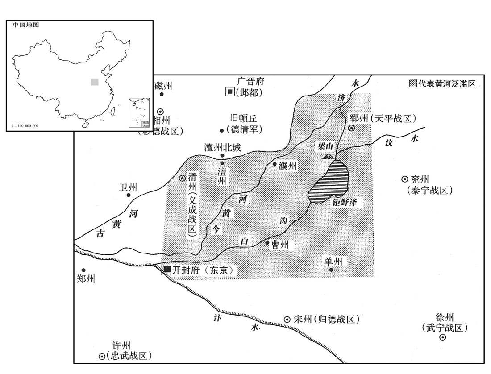
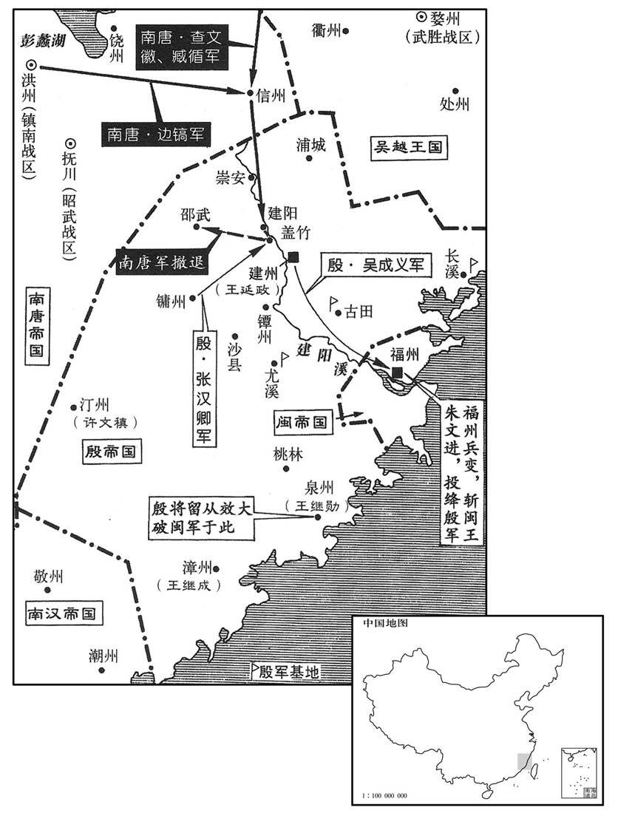
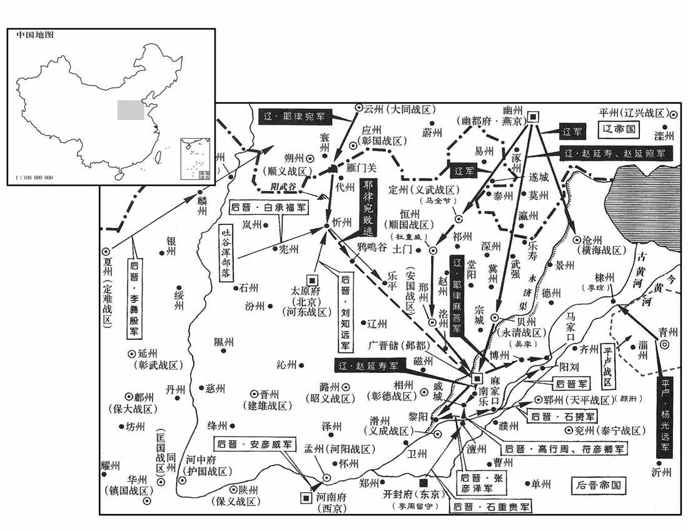
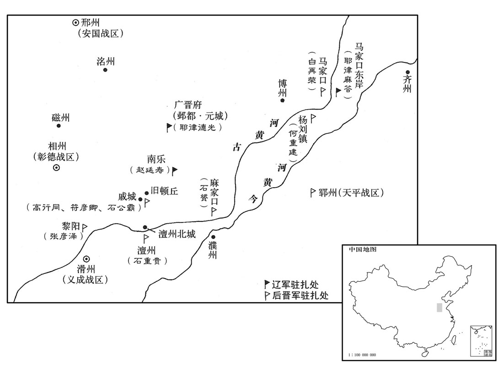
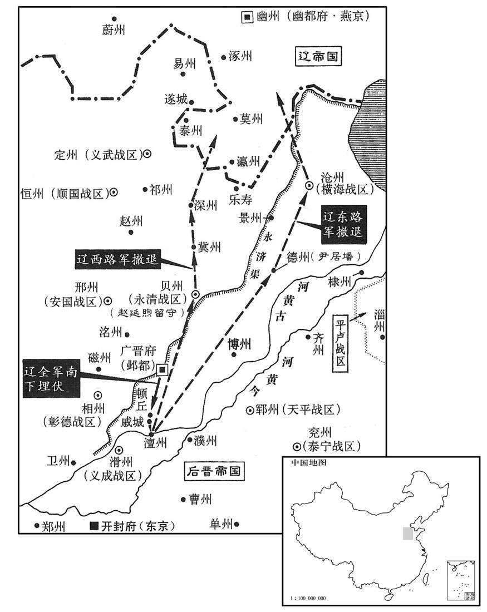
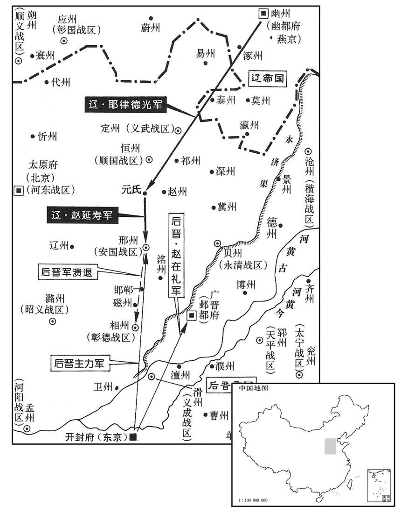
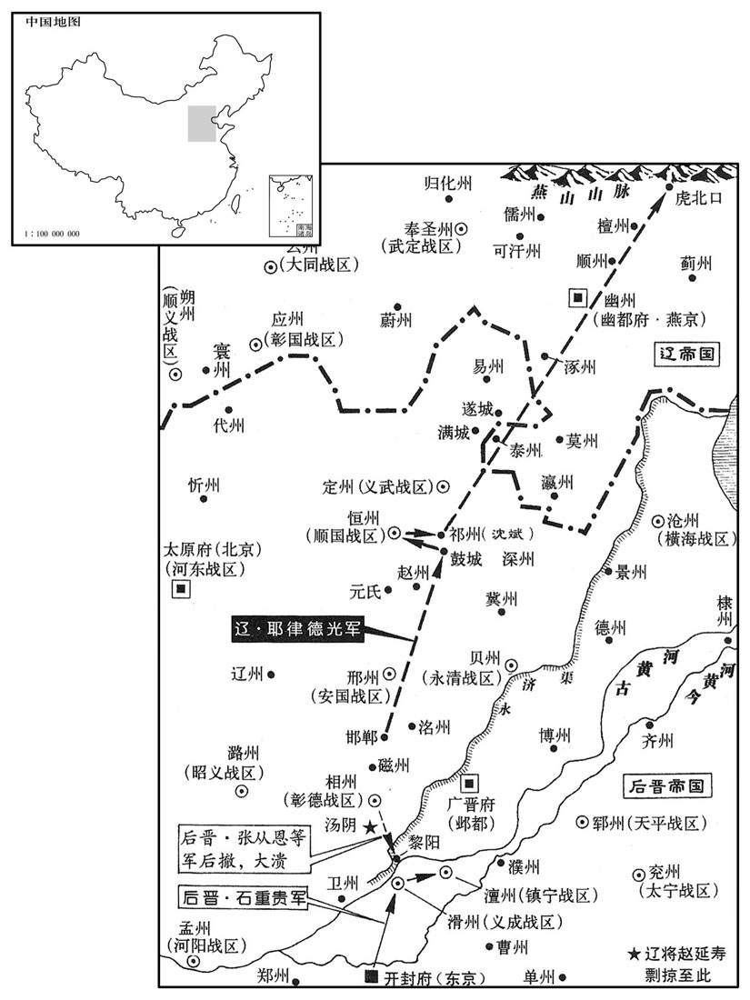
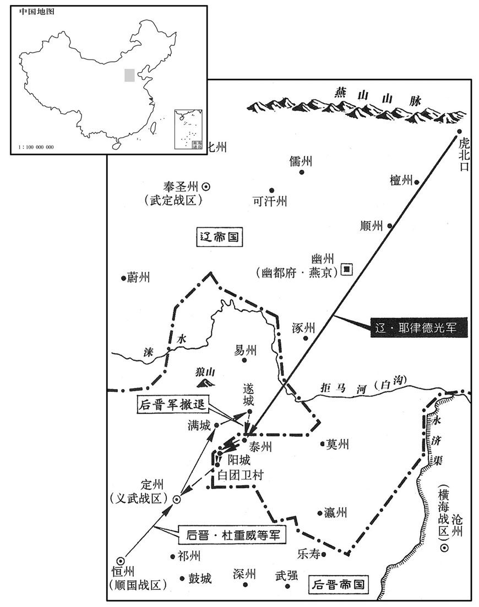
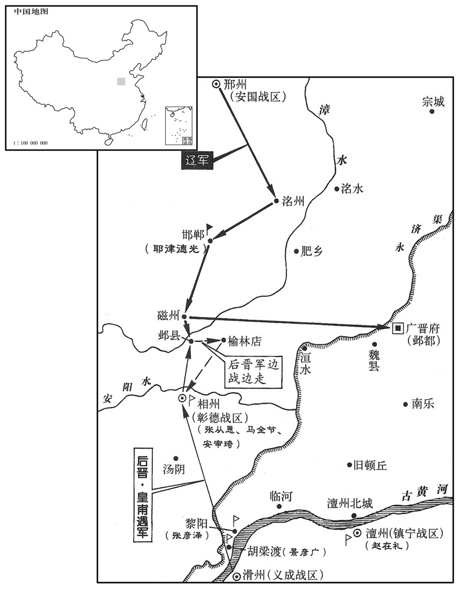

卷次与人物目录 / 卷284
资治通鉴 · 卷第二百八十四【后晋纪五】
公元944年至公元945年 · 原文、白话与胡三省注
本页按胡注本编排保存全卷内容。白话采用本站所据译本，未可靠对应的内容另列说明；事件标题用于定位，并非原书文字。
本卷共118段原文，111段有译文对应，7段缺译或待核对。
卷第二百八十四【后晋纪五】起阏逢执徐（甲辰）二月，尽旃蒙大荒落（乙巳）七月，凡一年有奇。
卷首原文与注释
齐王中
公元944年 · 后晋齐王开运元年
开运元年〔（甲辰、九四四）〕
上传原文的注释括号有异常，字符原样保留；无法可靠划分的段落默认全文显示。
本年记事分属相邻卷，按原书顺序分别保留：第283卷 · 第284卷。
本年事件索引（现代整理）
- 后晋命石赟何重建等将领防守黄河沿线渡口
- 后晋派李守贞率军沿黄河水陆并进
- 契丹围困戚城中的高行周符彦卿等军后晋出帝亲自解围
- 李守贞在马家口击败契丹军夺取营垒
- 后晋任李彝殷为契丹西南面招讨使
- 契丹败后屠杀贝州博州民众并焚杀俘虏
- 杨光远率青州兵西进企图会合契丹后晋调兵防备
- 后晋命刘知远率部出土门攻恒州并与杜威会师
- 李琼击退围攻棣州的杨光远后晋命何重建赴郓州
- 阶州成州义军王君怀叛晋投蜀并请为向导
- 契丹佯退设伏后与后晋军在澶州激战
- 契丹小校偷马逃来后晋称契丹将撤退景延广不敢追击
- 南汉主刘晟派刘弘昌祭祀刘隐陵时将其暗杀
- 契丹分兵北撤沿途焚掠并留赵延照守贝州
- 朱文进连重遇因惧闽人讨伐而结姻自保
- 李后与朱文进连重遇密谋弑杀闽王王曦
- 李后之父患病王曦前往探视时被朱文进派人刺杀
- 王延政派吴成义讨伐朱文进未能取胜
- 朱文进任鲍思润为宰相并任黄绍颇等为州刺史
- 后晋诏令太原恒州定州兵马各回本镇
- 马全节攻克契丹泰州
- 后晋诏令每七户征一人及兵械编为乡兵
- 秦州兵出黄阶岭击败西平蜀军
- 南汉任户部侍郎陈偓为同平章事
- 梁进率乡社兵收复德州高行周王周留守澶州后返大梁
- 景延广因不救戚城被调任西京留守高行周接掌亲军
- 后晋派三十六使者分道搜括百姓财物
- 卢亿劝景延广勿借国用之名加征河南府钱款
- 后晋派张仁愿至兖州搜括安审信私藏钱财
- 后晋任李守贞率两万兵马讨伐杨光远
- 薛可言在齐州击败前来救援青州的契丹军
- 后晋将征调乡兵改编为武定军共七万余人
- 张从恩奉命攻贝州赵延照弃城撤至瀛莫
- 朱文进遣使求援南唐南唐扣押使者后因疫病停战
- 后晋官军攻克淄州斩杀刘翰
- 冯道因处事依违被比作让禅僧飞鹰，后晋出帝任其为匡国节度使
- 后晋出帝复置枢密院任桑维翰为枢密使，朝政数月渐治
- 滑州黄河决口淹及五州，杨昭俭劝出帝下罪己诏而非刻碑纪功
- 府州刺史折从远拒绝契丹迁徙河西百姓并攻取十余寨
- 后晋恢复设置翰林学士并任李慎仪为承旨
- 后晋大赦天下并改元开运
- 后晋任刘昫为司空同平章事
- 后晋任刘知远为北面行营都统统领诸军备契丹
- 桑维翰出杨光远与景延广于外藩，节度使无人敢违其指挥
- 朔方节度使冯晖自陈未老可用，桑维翰回诏安抚
- 桑维翰随军国事务迅速裁决，但因恩怨必报而受人轻视
- 后晋出帝疑刘知远不援军并疏远之，郭威劝其依恃河东形势
- 朱文进自称威武留后并向后晋称藩，后晋任其为节度使知闽国事
- 后晋在澶州设置镇宁军并将濮州隶属其下
- 南唐刘金家族世袭濠州，刘崇俊求兼领寿州未果后被调任清淮节度使
- 后晋发生日食
- 契丹侵扰遂城乐寿，深州刺史康彦进将其击退
- 南汉主刘晟在邕州毒杀镇王刘弘泽
- 殷主王延政派陈敬佺屯兵尤溪古田并派卢进驻长溪
- 留从效等杀泉州刺史黄绍颇，迎王继勋主持军府
- 留从效派陈洪进赴建州途中谎称福州已诛朱文进
- 汀州刺史许稹上表请求归降殷国
- 后晋加朱文进同平章事并封闽王，诏命尚未抵达福州朱文进已被杀
- 杨光远困守青州粮尽，其子杨承勋等杀父开城降后晋
- 朱文进因黄绍颇被杀而募兵攻泉州，留从效击败福州军
- 南唐查文徽采纳臧循进取建州之策，攻殷失利而退保建阳
- 李守贞奉命处置杨光远，将其杀死并以病死上报
- 吴成义诈称南唐援兵将至，福州李光准等奉国宝向殷投降
- 林仁翰率众杀连重遇与朱文进，迎吴成义入福州
- 契丹再次大举入侵，后晋派张从恩等会兵邢州迎战
- 契丹主耶律德光率大军至元氏，后晋军退却溃乱
二月，甲辰朔，命前保义节度使石赟守麻家口，前威胜节度使何重建守杨刘镇，护圣都指挥使白再荣守马家口，西京留守安彦威守河阳。〔赟，于伦翻。按是时凡缘河津要，皆以兵守之，亦由燕、冀、瀛、莫入于北，辽人南寇，了无关山塘泺之阻，其兵可以径造河上，故不得不缘河为备也。〕未几，周儒引契丹将麻荅自马家口济河，营于东岸，攻郓州北津以应杨光远。麻荅，契丹主之从弟也。〔几，居岂翻。从，才用翻。郓，音运。〕
二月，甲辰朔（初一），后晋朝廷命前保义节度使石把守麻家口，前威胜节度使何重建把守杨刘镇，护圣都指挥白再荣把守马家口，西京留守安彦威把守河阳。不久，周儒引领契丹将军麻从马家口渡过黄河，在东岸扎营，攻打郓州北津以接应杨光远。麻是契丹主耶律德光的堂弟。
乙巳，遣侍卫马军都〔【章：十二行本「都」下有「指」字；乙十一行本同；孔本同；熊校同。】〕挥使，义成节度使李守贞、神武统军皇甫遇、陈州防御使梁汉璋、怀州刺史薛怀让将兵万人，缘河水陆俱进。守贞，河阳；汉璋，应州；怀让，太原人也。
乙巳（初二），后晋派遣侍卫马军都指挥使、义成节度使李守贞、神武统军皇甫遇、陈州防御使梁汉璋、怀州刺史薛怀让统兵万人，沿着黄河水陆并进。李守贞是河阳人；梁汉璋是应州人；薛怀让是太原人。
丙午，契丹围高行周、符彦卿及先锋指军使石公霸于戚城。〔春城时，戚属卫地，河上邑也。东坡指掌图以为卫之戚，今在博州界。按是时晋与契丹相拒于澶、卫之间，此戚城当在澶州之北，魏州之南，疑不在博州之界也。〕先是景延广令诸将分地而守，无得相救。行周等告急，延广徐白帝，帝自将救之。契丹解去，三将泣诉救兵之缓，几不免。〔几，居衣翻。〕
丙午（初三），契丹兵在戚城包围了高行周、符彦卿及先锋指挥使石公霸。起先，景延广命令诸将分地而守，不许相互救援。此时，高行周等告急，景延广延缓报告后晋出帝，后晋出帝自己带兵去救援。契丹兵围解除退去，三将涕泣地诉说救兵来得太慢，几乎不能免于一死。
戊申，李守贞等至马家口。契丹遣步卒万人筑垒，散骑兵于其外，余兵数万屯河西，船数千艘渡兵，未已，〔艘，苏遭翻。〕晋兵薄之，契丹骑兵退走，晋兵进攻其垒，拔之。契丹大败，乘马赴河溺死者数千人，俘斩亦数千人。河西之兵恸哭而去，由是不敢复东。〔杨光远之援绝矣。复，扶又翻。〕
戊申（初五），李守贞等到达马家口。契丹遣派一万步兵修筑堡垒，在其外散布骑兵戍守，其余兵众数万人屯驻在河西，有船数千艘运渡兵卒。没有多久，晋兵迫近他们，契丹的骑兵退走，晋兵进攻其堡垒，攻下了它们。契丹兵大败，骑马过河的人被淹死几千人，被俘、被杀的也有几千人。黄河西边的兵痛哭着退走，从此不敢再向东来。
辛亥，定难节度使李彝殷奏将兵四万自麟州济河，侵契丹之境。〔定难军，夏州。九域志：麟州西北至夏州一百二十里。自麟州东北至府州，又自府州东北行入契丹境。难，乃旦翻。〕壬子，以彝殷为契丹西南面招讨使。
辛亥（初八），定难节度使李彝殷奏报：统兵四万从麟州渡过黄河，侵入契丹之境。壬子（初九），后晋出帝任命李彝殷为契丹西南面招讨使。
初，契丹主得贝州、博州，皆抚慰其人，或拜官赐服章。及败于戚城及马家口，忿恚，〔恚，于避翻。〕所得民，皆杀之，得军士，燔炙之。由是晋人愤怒，戮力争奋。
过去，契丹主取得贝州、博州，都对这个地方的人加以抚慰，或者拜授官职、赐给有纹彩的官服。等在戚城及马家口打了败仗后他就恼恨了，把所虏得的民众都杀了，俘获的军士都烧死。因此引起晋国人的愤怒，团结合力，奋起斗争。
杨光远将青州兵欲西会契丹；戊午，诏石赟分兵屯郓州以备之。〔石赟时屯麻家口。〕
杨光远带领青州兵，想向西与契丹兵会合；戊午（十五日），后晋出帝下诏，命令石分出兵马驻扎在郓州，来防备他。
诏刘知远将部兵自土门出恒州击契丹，又诏会杜威、马全节于邢州。知远引兵屯乐平不进。〔乐平离太原二百余里耳。〕
后晋出帝诏命刘知远带领本部兵马从土门出恒州，进击契丹，又诏命他在邢州与杜威、马全节会合。刘知远引兵驻扎在乐平不再前进。
壬戍，杨光远围棣州，刺史李琼出兵击败之，〔杨光远自青州历淄州而围棣州。败，补卖翻。〕光远烧营走还青州。〔还，从宣翻，又如字。〕癸亥，以前威胜节度使何重建为东面马步都部署，将屯郓州。
壬戍（十九日），杨光远围困棣州，刺史李琼出兵把他打败，杨光远烧了营寨退回青州。癸亥（二十日），后晋朝延任命前威胜节度使何重建为东面马步都部署，统兵屯驻郓州。
阶、成义军指挥使王君怀帅所部千余人叛降蜀，请为乡道以取阶、成。〔乡，读曰向。阶、成，二州名。甲子，蜀人攻阶州。
两版字句有差异，建议核对原文。
阶州、成州义军指挥使王君怀率领所部千余人叛晋降蜀，请求当向导去攻取阶、成二州。甲子（二十一日），蜀人攻打阶州。
契丹伪弃元城去，伏精骑于古顿丘城，〔顿丘，汉古县。尔雅：丘一成曰顿丘。后移治所于阴安城。唐顿丘县，又移治于阴安城之南。天福三年，徙澶州跨德胜津，并顿丘县徙焉。顿丘凡三徙矣，古城盖阴安城也。以俟晋军与恒、定之兵合而击之。〔时诏杜威、马全节以兵来会，契丹欲俟其合而邀击之。〕邺都留守张从恩屡奏虏已遁去；大军欲进追之，会霖雨而止。契丹设伏旬日，人马饥疲。赵延寿曰：「晋军悉在河上，畏我锋锐，必不敢前；不如即其城下，〔即，就也。〕四合攻之，夺其浮梁，〔谓澶州德胜渡之河梁也。〕则天下定矣。」契丹主从之。三月，癸酉朔，自将兵十余万陈于澶州城北，〔宋白曰：契丹时驻兵澶州铁丘。陈，读曰阵；下同。〕东西横掩城之两隅，豋城望之，不见其际。高行周前军在戚城之南，与契丹战，自午至晡，互有胜负。契丹主以精兵当中军而来，帝亦出陈以待之。契丹主望见晋军之盛，谓左右曰：「杨光远言晋兵半已馁死，〔杨光远诱契丹入寇见上卷上年。〕今何其多也！」以精骑左右略陈，晋军不动，万弩齐发，飞矢蔽地。契丹稍却；又攻晋陈之东偏，不克。苦战至暮，两军死者不可胜数。〔胜，音升，〕昏后，契丹引去，营于三十里之外。〔不敢逼城而营，惧晋军攻劫也。〕
契凡假装舍弃了元城退去，把精锐骑兵埋伏在古顿丘城，来等待晋军与恒州、定州之兵会合之后再迎击它。邺都留守张从恩几次奏报北虏已经遁走，大军打算进击追逐它，后来由于遇上下雨而停止。契丹设置埋伏十天，人马饥饿疲乏，赵延寿说：“晋军都在河上，惧怕我们的精锐，必定不敢向前；不如就地攻下其城，四面合兵攻打，夺取黄河上的浮桥，那么天下就平定了。”契丹主听从了他的话，三月，癸酉朔（初一），亲自领兵十余万在澶州城的北面排开阵势，东面和西面横向包围城的两角，登城观望，看不见边际。高行周的前锋部队在戚城之南，与契丹兵交战，从晌午到日落，互有胜负。契丹主耶律德光指挥精兵向着中军进击而来，后晋出帝石重贵也率兵出来摆开阵势等待他过来。契丹主望见晋军的盛况，对左右说：“杨光远说晋兵之半数已经饿死，现在为什么还有这么多？”使用精锐骑兵从左方和右方攻打，晋军丝毫不动，万弩齐发，飞矢落下遍地都是。契丹兵稍向后退；又向晋军的东翼进攻，也攻不下来。若战到晚上，两军死亡的不可胜数。天黑以后，契丹引兵后退，在三十里之外扎营。
乙亥，契丹主帐中小校窃其马亡来，云契丹已传木书，收军北去。〔校，户教翻。木书者，书之于木以为信契。〕景延广疑其诈，闭壁不敢追。
乙亥（初三），契丹主帐中的小校盗其马逃来晋军，说契丹已经传递木书信契，收军北去。景延广怀疑有诈，关闭军垒不敢追击。
汉主命中书令、都元帅越王弘昌谒烈宗陵于海曲，〔刘龚举大号，追尊其兄隐为烈宗。〕至昌华宫，使盗杀之。
南汉主刘晟命中书令、都元帅越王刘弘昌到海曲进谒烈宗刘隐的陵墓，到了昌华宫后，指使盗贼把他杀了。
契丹主自澶州北分为军，一出沧、德，一出深、冀而归。所过焚掠，方广千里，广，古旷翻。民物殆尽。留赵延照为贝州留后。麻荅陷德州，擒刺史尹居璠。〔璠，音烦。〕
契丹主从澶州向北兵分两路，一支出沧州、德州，一支出深州、冀州而归去。所过的地方，大事焚烧抢掠，方圆面积有一千里，民间财物几乎被抢光了。留下赵延照为贝州留后。麻攻陷德州，捉住刺史尹居。
闽拱宸都指挥使朱文进，合门使连重遇，既弒康宗，〔见二百八十二卷天福四年。〕常惧国人之讨，相与结婚以自固。闽主曦果于诛杀，尝游西园，因醉杀控鹤指挥使魏从朗。从朗，朱、连之党也。又尝酒诵白居易诗云：「惟有人心相对间，咫尺之情不能料，」因举酒属二人。易，以豉翻。属，之欲翻。二人起，流涕再拜，曰：「臣子事君父，安有他志！」曦不应。二人大惧。
闽国拱宸都指挥使朱文进、阁门使连重遇，杀了康宗王昶以后，常常害怕国人声讨他们，便互相结为婚姻，用来巩固自己的势力。闽主王曦对诛杀很随便，他曾经游览西园，因为醉酒杀了控鹤指挥使魏从朗。魏从朗是朱文进、连重遇的党羽。又曾经在酒兴正浓时吟诵白居易的诗道：“惟有人心相对间，咫尺之情不能料”，边诵边举酒对着朱、连二人，二人起立，流涕再拜，说：“臣子侍奉君父，哪能有二心！”王曦没有什么反应，二人大为惶恐。
李后勡尚贤妃之宠，欲弒曦而立其子亚澄，〔尚贤妃有宠，见上卷天福八年，闽王之永隆四年也。亚澄时封闽王。使人告二人曰：「主上殊不平于二公，柰何﹖」
本段缺少可靠对应白话，原文完整保留；未使用生成译文。
会后父李真有疾，乙酉，曦如真第问疾。文进、重遇使拱宸马步使钱达弒曦于马上，召百官集朝堂，告之曰：「太祖昭武皇帝，光启闽国，〔朝，直遥翻。闽主王鏻举大号，追尊其父审知曰太祖昭武皇帝。〕今子孙淫虐，荒墬厥绪。天厌王氏，宜更择有德者立之。」更，工行翻。众莫敢言。重遇乃推文进升殿，被衮冕，〔被，皮义翻。〕帅群臣北面再拜称臣。〔帅，读曰率。〕文进自称闽主，悉收王氏宗族延喜以下少长五十余人，皆杀之。〔延喜，闽主之弟也。少，诗照翻。长，知两翻。〕葬闽主曦，谥曰睿文广武明圣元德隆道大孝皇帝，庙号景宗。以重遇总六军。礼部尚书、判三司郑元弼抗辞不屈，黜归田里，将奔建州，〔欲奔王延政也。〕文进杀之。文进下令，出宫人，罢营造，以反曦之政。
适逢李后的父亲李真生病，乙酉（十三日），王曦到李真的府第问候疾病。朱文进、连重遇指使拱宸马步使钱达在马上把王曦杀了，召集百官到朝堂，向大家宣告说：“太祖昭武皇帝光辉地开创闽国，现在子孙淫乱暴虐，使他的遗绪荒废坠落，上天厌弃王氏，应该另外选择有德的人拥立他为皇帝。”众人不敢讲话。连重遇便把朱文进推拥上殿升座，穿上帝王的衣服冠冕，帅领群臣向北面再拜称臣。朱文进自称闽主，把王氏宗族从王曦的弟弟王延喜以下少长五十余人，全部收拘，都杀了。埋葬了闽主王曦，谥为睿文广武明圣元德隆道大孝皇帝，庙号景宗。任用连重遇总领六军。礼部尚书、判三司郑元弼言词抗驳不屈服，罢黜他回归田里，在他将要投奔建州时，朱文进把他杀了。朱文进下令，遣出宫人，停止营建，以此改变王曦的政策。
殷主延政遣统军使成义将兵讨文进，不克。
殷主王延政遣派统军使吴成义领兵征讨朱文进，未能取胜。
文进加枢密使鲍思润同平章事，以枢密使鲍思润同平章事，以羽林统军使黄绍颇为泉州刺史，左军使程文纬为漳州刺史。汀州刺史同安许文稹，举郡降之。〔九域志：泉州同安县在州西一百三十五里，盖王氏所置也。宋白曰：开元十九年，析泉州南安县界四乡置大同场，闽王升为同安县。稹，章忍翻。〕
朱文进加封枢密使鲍思润同平章事，任用羽林统军使黄绍颇为泉州刺史，左军使程文纬为漳州刺史。汀州刺史同安人许文稹，献出守郡向朱文进投降。
丁亥，诏太原、恒、定兵各还本镇。
丁亥（十五日），后晋出帝下诏，命令太原、恒州、安州兵各还本镇。
辛卯，马全节攻契丹泰州，拔之。〔五代会要：后唐天成三年，升奉化军为泰州，以清苑县为理所。至晋开运二年九月，移治满城县；至周广顺二年二月，废州，其满城县割隶易州。时马全节自定州攻泰州。〕
辛卯（十九日），马全节攻打契丹的泰州，攻取下来。
敕天下籍乡兵，每七户共出兵械资一卒。
后晋出帝敕令天下按籍征召乡兵，每七户按一个兵卒共同出兵械钱。
秦州兵救阶州，出黄阶岭，败蜀兵于西平。〔败，补卖翻。〕
秦州兵救援阶州，出黄阶岭，在西平打败了蜀兵。
汉以户部侍郎陈偓同平章事。
南汉任用户部侍郎陈同平章事。
夏，四月，丁未，缘河巡检使梁进以乡社兵复取德州。〔乡社兵，民兵也。时契丹寇掠，缘河之民，自备兵械，各随其乡，团结为社，以自保卫。契丹陷德州而北归，梁进乘其去而复取之。已酉，命归德节度使高行周、保义节度使王周留镇澶州。庚戌，帝发澶州；甲寅，至大梁。
本段缺少可靠对应白话，原文完整保留；未使用生成译文。
侍卫马步都指挥使、天平节度使、同平章事景延广，既为上下所恶，〔上，谓将相大臣；下，谓军民。恶，乌路翻。〕帝亦惮其不逊难制；桑维翰引其不救戚城之罪，〔引，牵也；牵发其罪，犹人收卷衣物于怀袖间，从而牵出之然。〕辛酉，如延广兼侍中，出为西京留守。〔晋徙都汴，以河南府为西京。〕以归德节度使兼侍中高行周为侍卫马步都指挥使。延广郁郁不得志，〔橛竖小人，得权则骄溢使气，失权则郁郁不得志，乃其常也。〕其契丹强盛，始忧国破身危，遂日夜纵酒。〔自知无复全地，苟取朝夕之乐。〕
侍卫马步都指挥使、天平节度使、同平章事景延广，既已被将相和军民上下所厌恶，后晋出帝也怕他不驯服，难于控制；桑维翰又提出他不救援戚城之罪，辛酉（十九日），给景延广加官兼任侍中，出朝任西京留守。任用归德节度使兼侍中高行周为侍卫马步都指挥使。景延广郁郁不得志，看到契丹强盛，开始忧虑国家要破败，自身也危亡，便昼夜放纵饮酒。
朝廷因契丹入寇，国用愈竭，复遣使者三十六人分道括率民财，各封剑以授之。〔示使专断斩，此以威胁取民财也，复，扶又翻。〕使者多从吏卒，携锁械、刀杖入民家，小大惊惧，求死无地。州县吏复因缘为奸。〔复，扶又翻；下同。〕
后晋朝廷由于契丹入侵，国家财用更加困竭，便又遣派使者三十六人分到各道搜括民间财物，每个使者各封赐给上方宝剑，授以斩杀之权。这些使者带着众多的吏卒随从，拿着锁链刑械、刀杖进入民众家里，小孩大人都很惊怕，想要求死都无路可走。那些州和县的官吏又借此机会为非作歹。
河南府出缗钱二十万，〔此括率合出之数也。景延广率三十七万。〔景延广增率十七万，欲以入己。〕留守判官〔【章：十二行本「官」下有「河南」二字；乙十一行本同；张校同。】〕卢亿言于延广曰：「公位兼将相，富贵极矣。今国家不幸，府库空竭，不得已取于民，公何忍复因而求利，为子孙之累乎！」〔累，力瑞翻。〕延广凓而止。〔史言景延广差愈于杜重威。〕
两版字句有差异，建议核对原文。
河南府应出缗钱二十万，景延广增加到三十七万。留守判官卢向景延广进言说：“您高位兼居将相，富贵达到极点了。现在国家不幸，府库空乏竭尽，不得已索取于百姓，您怎么忍心再借机贪求私利，给子孙增加罪累啊！”景延广惭愧而停止增赋。
先是，诏以杨光远叛，命兖州修守备。〔青、兖邻镇，故命之为备。先，昔荐翻。〕泰宁节度使安审信，以治楼堞为名，〔堞，达协翻。〕率民财以实私藏。〔藏，徂浪翻；下同。〕大理卿张仁愿为括率使，至兖州，赋缗钱十万。值审信不在，〔不在者，适不在镇。〕拘其守藏吏，指取钱一囷，已满其数。〔史言晋之藩镇，利国有难，浚民以肥家。〕
以前，后晋朝廷因为杨光远背叛，下诏命令兖州修筑守备设施。泰宁节度使安审信用建造城防楼堞的名义，搜括民间财物来充实自己的收藏。后晋朝廷大理寺卿张仁愿受派为括率使，来到兖州，收取缗钱十万。正适安审信不在，拘捕了他的守藏吏，指令取一个库的钱，便满足了所需之数。
戊寅，命侍卫马步军都虞候、泰宁节使李守贞将步骑二万讨杨光远于青州；〔李守贞盖代安审信帅泰宁也。〕又遣神武统军洛阳潘环及张彦泽等将兵屯澶州，以备契丹。
五月，戊寅（初七），后晋朝廷命侍卫马步军都虞候和泰宁节度使李守贞统领步骑二万人讨伐青州的杨光远，又遣派神武统军洛阳人潘环及张彦泽统兵屯驻澶州，来防备契丹。
契丹遣兵救青州，齐州防御使堂阳薛可言邀击，败之。〔堂阳县属冀州，宋皇佑四年，省县为镇，入南宫县。九域志曰：地在堂水之阳。败，补卖翻。〕
契丹派兵救援青州，晋国齐州防御使堂阳人薛可言迎击，打败了他们。
丙戌，诏诸州所籍乡兵，号武定军，凡得七万余人。时兵荒之余，复有此扰，民不聊生。〔异时契丹入汴，武定军曷尝能北向发一矢乎！复，扶又翻。〕
丙戌（十五日），后晋朝廷诏令诸州所按户籍征调的乡兵，号称武定军，共得七万余人。当时正值兵荒之余，再有这样的困扰，致使民不聊生。
丁亥，邺都留守张从恩上言：「赵延照虽据贝州，麾下兵皆久客思归，宜速进军攻之。」诏以从恩为贝州行营都部署，督诸将击之。辛卯，从恩奏赵延照纵火大掠，弃城而遁，屯于瀛、莫，阻水自固。〔瀛、莫之间多水泺，故赵延照阻以为固。瀛、莫相去一百一十里。〕
丁亥（十六日），邺都留守张从恩上奏后晋朝廷：“赵延照虽然占据贝州，他指挥下的契丹兵卒都是久客在外思归，应该迅速进军攻打它。”诏令任用张从恩为贝州行营都部署，督率诸将进击。辛卯（二十日），张从恩奏报赵延照放火大肆抢掠，弃城而逃，屯扎在瀛州、莫州，依水设阻，巩固自己的阵地。
朱文进遣使如唐，唐主囚其使，将伐之，〔唐主欲讨朱文进弒君之罪。〕会天暑、疾疫而止。
闽国朱文进遣派使者到南唐，南唐主李把使者囚禁起来，将要征伐闽国，正好遇到天气暑热、疫病流行才停止。
六月，辛酉，官军拔淄州，斩其刺史刘翰。〔淄州，杨光远之巡属也。〕
六月，辛酉（二十一日），后晋官军攻克淄州，斩杀杨光远的刺史刘翰。
太尉、侍中冯道虽为首相，〔冯道自唐潞王之时，已正拜三公，晋高祖入洛，用以为相，位任在执政之右。〕依违两可，无所操决。〔此冯道保身固位之术，一生所受用者也。操，七刀翻。〕或谓帝曰：「冯道，承平之良相；今艰难之际，譬如使禅僧飞鹰耳。」〔言禅以静寂为宗，僧以慈悲不杀为教。为禅僧者，第能机辩无穷，而不能应物，使之飞鹰搏击，非其任也。癸卯，以道为匡国节度使，兼侍中。〔出冯道镇同州，将别命相也。〕
两版字句有差异，建议核对原文。
后晋太尉、待中冯道虽当首相，但办事模棱两可，什么事都不拿主意。有人对后晋出帝说：“冯道是和平时期的好宰相，现在是艰难之际，比如让参禅僧人去飞鹰搏兔，非其所擅。”癸卯（初三），任用冯道出朝为匡国节度使，仍兼侍中。
或谓帝曰：「陛下欲御北狄，安天下，非桑翰不可。」〔请罢冯道，请用桑维翰，盖出一人之口。前史谓维翰倩人以言于帝，通鉴皆曰「或」者，疑其辞。〕丙午，复置枢密院，〔罢枢密院见二百八十二卷高祖天福四年。〕以维翰为中书令兼枢密使，事无大小，悉以委之。数月之间，朝廷差治。〔治，直吏翻。〕
有人对后晋出帝说：“陛下想要抵御北狄，安治天下，非用桑维翰不可。”丙午（初六），恢复设置枢密院，任命桑维翰为中书令兼枢密使，事情不论大小，都委托给他。几个月之间，朝廷的事稍见治绩。
滑州河决，浸汴、曹、单、濮、郓五州之境，环梁山合于汶。〔梁山在郓州寿张县，汶水自东北来，与济水会于梁山东北。今决河之水弥漫，环梁山而合于汶。单，音善。濮，音卜。环，音宦。汶，音问。〕诏大发数道丁夫塞之。〔塞，昔则翻。〕既基，帝欲刻碑纪其事。中书舍人杨昭俭谏曰：「陛下刻石纪功，不若降哀痛之诏；染翰颂美，不若颁罪己之文。」帝善其言而止。
黄河在滑州决口，淹浸了汴、曹、单、濮、郓五州的地区，环绕梁山合流入汶水。后晋朝廷诏命大规模发动几个道的民夫去堵塞。堵塞完成之后，后晋出帝要刻碑记载此事。中书令舍人杨昭俭进谏说：“陛下刻石记功，不如降下哀痛的诏书；点染翰章歌颂美德，不如颁发责备自己的文告。”后晋出帝认为他的话说得好而停止。

初，高祖割北边之地以赂契丹，〔事见二百八十卷高祖天福元年。〕由是府州刺史折从远亦北属。〔府州领府谷一县，后唐以麟州东北河滨之地置。宋白曰：府州本河西蕃界府谷镇。土人折嗣伦，世为镇将。后唐庄宗天佑七年，升镇为府谷县；八年，升建府州以扼蕃界，以嗣伦男从远为刺史。折，姓；从远，名。姓氏略：折，常列翻。〕契丹欲尽徙尽徙河西之民以实辽东，州人大恐，从远因保险拒之。及帝与契丹绝，遣使谕从远使攻契丹。从远引兵深入，拔十余寨。戊午，以从远为府州团练使。从远，云州人也。〔欧史曰：折从远，云中人，盖指古云中大郡大界言之。
两版字句有差异，建议核对原文。
从前，后晋高祖石敬瑭割让北边的地盘来贿赂契丹，于是府州刺史折从远也随郡北属。契丹想把黄河以西的民众全部迁移去充实辽东，府州民众大为惊恐，折从远便据险抗拒。等到后晋出帝与契丹绝交，派使者谕告折从远让他攻打契丹。折从远率领兵马深入北境，拔除契丹十多个营寨。戊午（十八日），任用折从远为府州团练使，折从远是云州人。
甲子，复置翰林学士。〔废翰林学士，见二百八十二卷天福五年。〕戊辰，以右散骑常侍李慎仪为兵部侍郎、翰林学士承旨，都官郎中刘温叟、金部郎中，知制诰武强徐台符、〔武强县属深州。九域志：在州东北六十里。礼部郎中李澣、主客员外郎宗城范质，皆为学士。温叟，岳之子也。〔刘岳见二百五十卷唐明宗天成元年。〕
两版字句有差异，建议核对原文。
甲子（二十四日），恢复设置翰林学士。戊辰（二十八日），后晋出帝任用右散骑常侍李慎仪为兵部侍郎、翰林学士承旨，都官郎中刘温叟、金部郎中、知制诰武强人徐台符、礼部郎中李浣、主客员外郎宗城人范质，都任用为学士。刘温叟是唐明宗时刘岳的儿子。
秋，七月，辛未朔，大赦，改元。〔改元开运。〕
秋季，七月，辛未朔（初一），实行大赦，改年号为开运。
已丑，以太子太傅刘昫为司空兼门下侍郎、同平章事。
己丑（十九日），后晋朝廷任命太子太傅刘为司空兼门下侍郎、同平章事。
八月，辛丑朔，以河东节度使刘知远为北面行营都统，顺国节度使杜威为都招讨使，督十三节度以备契丹。
八月，辛丑朔（初一），任用河东节度使刘知远为北面行营都统，顺国节度使杜威为都招讨使，督导十三个节度使来防备契丹。
桑维翰两秉朝政，出杨光远、景延广于外，〔杨光远、景延广，先皆尝总宿卫兵。天福初，桑维翰秉政，出杨光远；是时再秉政，出景延广。朝，直遥翻。〕至是一制指挥，节度使十五人无敢违者，〔刘知远、杜威并十三节度为十五人。按薛史载十三节度：郓州张从恩，充马步都监；西京留守景延广，充都排阵使；徐州赵在礼，充都虞候；晋州安叔千，充左厢排阵使；前兖帅安审信，充右厢；河中安审琦，充马步都指挥使；河阳符彦卿，充马军左厢；滑州皇甫遇，充右厢；右神武统军张彦泽，充马军排阵使；沧州王廷胤，充步军左厢都指挥使；陕州宋彦筠，充右厢；前金帅田武，充步军左厢排阵使；右龙武统军潘环，充右厢。〕时人服其胆略。
桑维翰两次执掌朝政，调出杨光远、景延广到外藩，到这时统一指挥权，节度使十五人没有敢违抗者，当时人叹服他的胆略。
朔方节度使冯晖上章自陈未老可用，而制书见遗。维翰诏禁直学士〔诏禁直学士者，以诏旨诏之也。禁直学士，学士之入直禁地者也。〕使为答诏曰：「非制书忽忘，〔忘，巫放翻。〕实以朔方重地，非卿无以弹压。比欲移卿内地，〔比，毗至翻。〕受代亦须奇才。」〔「受」，当作「授」。〕晖得诏，甚喜。
朔方节度使冯晖上奏章陈说自己没有老，还可留用，而后晋出帝下制令时没有提到他。桑维翰用诏旨让入值禁宫的学士拟写答诏说：“不是制令忽略忘记，实在因为朔方是重要之地，不是你没有别人能够弹压得住。近来考虑把你移调内地，代替你的人也需要奇才。”冯晖得到诏书，极为高兴。
时军国多事，百司及使者咨请辐凑，维翰随事裁决，初若不经思虑，人疑其疏略；退而熟议之，亦终不能易也。然为相颇任爱憎，一饭之恩、睚鈪之怨必报，人以此少之。〔史称桑维翰之长而并及其短，所以明是非，示劝警。睚，五懈翻。鈪，士懈翻。少，诗照翻。
两版字句有差异，建议核对原文。
当时，军务、国事很繁重，百官及各地使者来请示、报告的人东水马龙，接连不断，桑维翰随事裁决，起初好像是没有经过思虑人们怀疑他有粗疏忽略，但退下来后仔细斟酌，终于没有可改变的。然而他当宰相时颇以自己的爱憎办事，一饭之恩、瞪眼之怨，必定报复，人们因此对他也有非议。
契丹之入寇也，帝再命刘知远会兵山东，〔太原以河北之地为山东。帝初诏刘知远自土门出恒州，寻又诏会兵邢州，并见上。〕皆后期不至。帝疑之，谓所亲曰：「太原殊不助朕，必有异图。果有分，何不速为之！」〔言若有分为天子，何不速为之。怒之之辞也。分，扶问翻。〕至是虽为都统，而实无临制之权，密谋大计，皆不得预。知远亦自知见疏，但慎事自守而已。郭威见知远有忧色，谓知远曰：「河东山川险固，〔河东治晋阳，东阻太行、常山，西限龙门、西河，南有霍太山、雀鼠谷之隘，北有鴈门、五台诸山之险，故云然。风俗尚武，土多战马，〔此所谓侍险与马也。〕静则勤稼穑，动则习军旅，此霸王之资也，〔王，于况翻。〕何忧乎！」
契丹入侵时，后晋出帝再次命令刘知远会师到崤山以东，都过期了还没有到。后晋出帝怀疑他，对亲近的人说：“太原很不帮助朕，必然有反叛的图谋。如果有当天子的福份，为什么不早点干！”到此时虽然任用他为诸军都统，实际上没有施行指挥的权力，密谋军国大事，都不让他参加。刘知远也自知被后晋出帝疏远，只是谨慎处事自我守护而已。郭威看到刘知远有忧虑之色，对他说：“河东地方山川险要坚固，风俗崇尚勇武，此地多产战马，安静的时候勤于农业生产，动乱的时候勇于练习军事，这是成就霸业和王道的依凭，有什么可忧虑的。！”
朱文进自称威武留后，权知闽国事，遣使奉表称藩于晋。癸丑，以文进为威武节度使，知闽国事。
朱文进自称威武留后，暂时主持闽国事务，派使者呈奉表章向后晋朝廷称藩。癸丑（十三日），后晋朝廷任用朱文进为威武节度使，主持闽国事务。
癸亥，置镇宁军于澶州，以濮州隶焉。〔割天平巡属之濮州隶镇宁军。〕
癸亥（二十三日），后晋在澶州设置镇宁军，把濮州隶属其下。
初，吴濠州刺史刘金卒，子仁规代之；仁规卒，子崇俊代之。唐烈祖置定远军于濠州，〔唐置定远军于濠州，通鉴书于天福八年三月元宗即位之后，见上卷。〕以崇俊为节度使。会清淮节度使姚景卒，〔唐置清淮军于寿州。〕崇俊厚赂权要，求兼领寿州。唐主阳为不知其意，徙崇俊为清淮节度使，以楚州刺史刘彦贞为濠州观察大使，驰往代之；崇俊悔之。彦贞，信之子也。〔刘信事吴杨氏，四世有战功。〕
当初，吴国濠州刺史刘金死后，他的儿子刘仁规代替了他；刘仁规死后，其子刘崇俊代替了他。南唐烈祖李在濠州设置定远军，任用刘崇俊为节度使。正遇上清淮节度使姚景死去，刘崇俊用重礼厚赂朝中权要，要求兼领寿州。南唐主假装不明白他的意思，把刘崇俊调迁为清淮节度使，另任楚州刺史刘彦贞为濠州观察使，赶奔濠州代替了他；刘崇俊很后悔。刘彦贞是吴国刘信的儿子。
九月，庚午朔，日有食之。
九月，庚午朔（初一），发生日食。
丙子，契丹寇遂城、乐寿，〔遂城县，属易州，宋太平兴国六年，置威虏军，景德元年，改广信军，在易州东南八十里，当五回岭及狼山之要；金置遂州。乐寿县属深州，宋分属瀛州。九域志：在瀛州之八十里。〕深州刺史康彦住击却之。
丙子（初七），契丹入侵遂城、乐寿，深州刺史康彦进击退了他们。
冬，十月，丙午，汉主毒杀镇王弘泽于邕州。
冬季，十月，丙午（初七），南汉主刘晟在邕州把镇王刘弘泽毒死。
殷主延政遣其将陈敬佺以兵三千屯尤溪及古田，〔唐永泰二年，分候官、尤溪置古田县，属福州。九域志：在州西北一百八十里。尢溪县在南剑州南一百九十五里。宋白曰：按尤溪县理，今当延平东南二百四十里，在福州西北八百三十五里，其地与漳州龙岩县、剑州沙县及福州候官县三处交界，山洞幽深，滩溪险峻，内有千里，诸境逃人多投此洞。开元二十八年，经略使唐修忠招谕其人，因以名县。此源先号尤溪，因名。古田。古田县亦开二十九年开山洞置。〕卢进以兵二千屯长溪。〔唐武德六年，置长溪县，属福州。九域志：在州东北三百四十五里。宋白曰：长溪县本汉闽县地，唐置温麻县，以县界温麻溪为名；天宝九年，改为长溪县。〕
殷国国主王延政遣派其将陈敬领兵三千屯驻在尤溪及古田，卢进领兵二千屯驻在长溪。
泉州散员指挥使桃林留从效〔九域志：泉州有桃林溪，盖留从效所居之地。散，昔亶翻。〕谓同列王忠顺、董思安、张汉思曰：「朱文进屠灭王氏，遣腹心分据诸州。吾属世受王氏恩，而交臂事贼，一旦富沙王克福州，殷主延政本封富沙王。〕吾属死有余愧！」众以为然。十一月，从效等各引军中所善壮士，夜饮于从效之家，从效绐之曰：「富沙王已平福州，密旨令吾属讨黄绍颇。〔朱文进时以黄绍颇为泉州刺史。〕吾观诸君状貌，皆非久处贫贱者。从吾言，富贵可图；不然，祸且至矣。」众皆踊跃，操白梃，踰垣而入，执绍颇，斩之。〔处，昌吕翻。操，七刀翻。梃，大鼎翻。〕从效持州印诣王继勋第，请主军府。从效自称平贼统军使，函绍颇首，遣副兵马使临淮陈洪进赍诣建州。〔唐长安四年，分徐城南界两乡，于沙熟淮口置临淮县。开元二十三年，移治泗州郭下。陈洪进盖本临淮人而从军泉州。〕
泉州散员指挥使姚林人留从效对同列为官的王忠顺、董思安、张汉思说：“朱文进屠灭了王氏家族，派遣他的心腹之人分别占据各州。我们这些人世代蒙受王氏的恩惠，却拱手服从奸贼，一旦富沙王攻下福州，我们死有余愧啊！”众人认为他说得对。十一月，留从效等各自率领军中所要好的壮士，夜晚在留从效家中饮酒，留从效骗诱他们说：“富沙王已经平定福州，有密旨让我们讨拿黄绍颇。我看诸位的相貌，都不是久居贫贱之人。听我的话，富贵可以谋求；不然的话，大祸就要临头了。”众人都很积极响应，拿起棍棒，跳墙而入，捉住黄绍颇，把他杀了。留从效拿着泉州的印信到王继勋的府第去见他，请他出来主持军府的事务。留从效自称是平贼统军使，用匣子装了黄绍颇的首级，遣派副兵马使临淮人陈洪进捧着送到建州王延政那里。
洪进至尤溪，福州戍兵数千遮道。洪进绐之曰：「义师已诛朱福州，〔朱文进据福州，故以称之。吾倍道逆嗣君于建州，〔嗣君，谓殷主延政当嗣有闽国。〕尔辈尚守此何为乎！」以绍颇首示之，众遂溃，大将数人从洪进诣建州。延政以继勋为侍中、泉州刺史，从效、忠顺、思安、洪进皆为都指挥使。漳州将程谟闻之，〔按九域志，泉州西南至漳州韭百六十里，邻郡。〕亡〔【章：乙十一行本「亡」作「立」；孔本作「亦」。】〕杀刺史程文纬〔「亡」当作「立」，笔误也；否则「亦」字。〕立王继成权州事。继勋、继成，皆延政之从子也，〔从，才用翻。〕朱文进之灭王氏，〔事见上三月。〕二人以疏远获全。
本段缺少可靠对应白话，原文完整保留；未使用生成译文。
汀州刺史许稹奉表请降于殷。〔稹，止忍翻。〕
汀州刺史许文稹上表章请求顺降于殷国。
十二月，癸丑，加朱文进同平章事，封闽国王。〔癸丑，大梁出命之日也，命未达而文进诛矣。
本段缺少可靠对应白话，原文完整保留；未使用生成译文。
李守贞围青州经时，〔是年五月，李守贞围青州。〕城中食尽，饿死者太半。契丹援兵不至，杨光远遥稽道于契丹〔稽，音启。〕曰：「皇帝，皇帝，误光远矣！」其子承勋、承祚、承信劝光远降，冀全其族。光远不许，曰：「吾昔在代北，尝以纸钱祭天池而沉，〔杨光远本沙陀部人，居代北。天池，即汾阳县之天池，时属岚州静乐县界。沉，持林翻。〕人皆言当为天子，姑待之。」丁巳，承勋斩劝光远反者节度判官丘涛等，送其首于守贞，纵火大噪，劫其父出居私第，上表待罪，开城纳官军。
李守贞围攻青州已经很长时间，城中食粮用尽，饿死的人有一大半。契丹的援兵不来，杨光远向遥远的契丹方向叩拜说：“皇帝啊皇帝！把我杨光远耽误了！”他的儿子杨承勋、承祚、承信劝杨光远投降，以求能够保全家族。杨光远不答应，说：“从前我在代北时，曾经用纸钱祭祀天池，纸钱下沉了，人们都说我应当为天子，姑且等待一下。”丁巳（十九日），杨承勋杀了劝杨光远造反的节度判官丘涛等人，把他们的头送到李守贞处，放火大声喧闹，劫持他父亲住到私人宅第，向后晋朝廷上表等待治罪，开城接进官军。
朱文进闻黄绍颇死，大惧，以重赏募兵二万，遣统军使林守谅、内客省使李廷锷将之攻泉州，钲鼓相闻五百里。〔福州至泉州不及四百里，史家张大以言其声势耳。将，即亮翻。〕殷主延政遗大将军杜进将兵二万救泉州，留从效开门与福州兵战，大破之，斩守谅，执廷锷。延政遣统军使吴成义帅战千艘攻福州，〔舰，户黯翻。艘，疏刀翻。〕朱文进遣子弟为质于吴越以求救。〔质，音致。〕
朱文进听说黄绍颇死了，大为恐惧，用重赏招募兵卒二万人，遣派统军使林守谅、内容省使李廷锷统领他们进攻泉州，钲鼓之声相闻达五百里。殷主王延政派大将军杜进领兵二万救援泉州，留从效打开城门与福州兵交战，把对方打得大败，斩了林守谅，捉住李廷锷。王延政派统军使吴成义率领战船千艘攻打福州，朱文进遣派子弟到吴越作人质，向吴越求救。
初，唐翰林待诏臧循，〔盛唐之时有翰林待诏，以处伎艺之人。〕与枢密副使查文徽同乡里，循常为贾人，习福山川，为文徽画取建州之策。〔贾，音古。为文，不伪翻。〕六徽表请用兵击王延政，国人多以为不可。唐主以文徽为江西安抚使，循行境上，觇其可否；〔行，下孟翻。觇，丑廉翻，又丑艳翻。〕文徽至信州，奏言攻之必克。唐主以洪州营屯都虞候边镐为行营招讨诸军都虞候，将兵从文徽伐殷。文徽自建阳进屯盖竹，〔唐武德四年，分建安县置建阳县，属建州。建阳在建州西一百三十里。建阳县之南二十五里，有地名盖竹。〕闻漳、泉、汀三州皆降于殷，殷将张汉卿〔【章：十二行本「卿」作「真」；乙十一行本同；孔本同。】〕自镛州将兵八千将至，文徽惧，退保建阳。臧循屯邵武，〔邵武亦本汉冶县之地，吴于此立昭武镇；晋平吴，更昭武镇曰邵武县；隋废而复置，唐属建州。九域志：在州西南二百七十里。宋白曰：邵武县本东候官县之北乡也，孙策置南平县。吴景帝三年，置昭武县；晋太康三年，改为邵武。〕邵武民导殷兵袭破循军，执循送建州斩之。
从前，南唐翰林待诏臧循，与枢密副使查文徽是同乡，臧循常作商贩，熟悉福建的山水情况，替查文徽谋划攻取建州的办法。查文徽上表南唐主请求用兵攻打王延政，而南唐国中之人大多数认为不可。南唐主李任命查文徽为江西安扶使，循行在辖境上，来察看是否可行；查文徽到达信州，上奏称攻击它必定能够取得胜利。南唐主便任命洪州营屯都虞候边镐为行营招讨诸军都虞候，领兵随着查文徽讨伐殷国。查文徽从建阳进屯盖竹，听说漳州、泉州、汀州都降顺于殷，殷将张汉卿从镛州领兵八千将要来到，查文徽害怕，退保建阳。臧循屯驻邵武，邵武的百姓引导殷兵袭破臧循的军队，抓获了臧循，送到建州后就把他杀了。

朝廷以杨光远罪大，而诸子归命，难于显诛，命李守贞以便宜从事。闰月，癸酉，守贞入青州，遣人拉杀光远于别第，以病死闻。〔拉，卢合翻。〕丙戌，起复杨承勋，除汝州防御使。〔昔楚令尹子南以罪诛，其子弃疾，以不忍弃父事雠而死。李怀光之反，河中既破，唐德宗欲活其子璀而不可得。彼二子者，以父子之亲，居君臣之变，审义安命，以死殉亲，夫岂不乐生，义不可也。若杨承勋兄弟，出于藩落，枭獍其心，囚父归命，以希苟活；晋朝以不杀降为说，于理且未安，又从而录用之，宜异时契丹得假大义以泄其愤也。〕
后晋朝廷由于杨光远罪大，而他的几个儿子却归服朝廷，难于进行过份的诛杀，便命令李守贞斟酌处理。闰十二月，癸酉（初五），李守贞进入青州，派人把杨光远在他的别宅拉拽出来杀了，上报说是病死了。丙戍（十八日），恢复起用杨承勋，授官为汝州防御使。
殷吴成义闻有唐兵，诈使人告福州吏民曰：「唐助我讨贼臣，大兵今至矣。福人益惧。乙未，朱文进遣同平章事李光准等奉国宝于殷。
殷国吴成义听说南唐兵来了，派人告诉福州的吏民、诈称：“唐兵帮助我们讨伐贼臣，大兵现在到了。”福州人更加恐惧，乙未（二十七日），朱文进派同平章事李光准等护送国宝给殷国。
丁酉，福州南廊承旨林仁翰〔南廊承旨，闽所置官，盖亦侍卫武臣之职也。〕谓其徒曰：「吾曹世事王氏，今受制贼臣，富沙王至，何面见之！」帅其徒三十人被甲趣连重遇第，〔帅，读曰率。被，皮义翻。趣，七喻翻。〕重遇方严兵自卫，三十人者望之，稍稍遁去。仁翰执槊直前刺重遇，杀之，刺，七亦翻。〕斩其首以示众曰：「富沙王且至，汝辈族矣！今重遇已死，何不亟取文进以赎罪！」众踊跃从之，遂斩文进，迎吴成义入城，函二首送建州。
丁酉（二十九日），福州南廊承旨林仁翰对他的徒众说：“我们世世代代侍奉王氏，现在受到贼臣的辖制，富沙王来了，有什么脸面见他！”于是率领他的徒众三十人披上铠甲奔向连重遇的府第，连重遇正用兵卒严密地保卫自己，这三十个人看到如此情状，稍微后退遁走。林仁翰手执长槊直奔向前刺连重遇，把他杀了，砍下他的头来示众说：“富沙王将要来到，你们这些人要全家族灭了！现在连重遇已死，为什么还不赶快去攻取朱文进来为自己赎罪！”众人踊跃地跟着他，从而杀了朱文进，迎接吴成义进城，用匣装了朱、连二人的首级送往建州。
契丹复大举入寇，〔复，扶又翻。〕卢龙节度使赵延寿引兵先进。〔契丹复以赵延寿为军锋。〕契丹前锋至邢州，顺国节度使杜威遣使间道告急。〔契丹前锋已至邢州，恒州信使路绝，故间道而来。间，古苋翻。〕帝欲自将拒之，会有疾，〔将，即亮翻。〕命天平节度使张从恩、邺都留守马全节、护国节度使安审琦会诸道兵屯邢州，武宁节度使赵在礼屯邺都。〔马全节自邺都进屯邢州，令赵在礼自徐州进屯邺都为后镇。〕
契丹再次大举入侵，卢龙节度使赵延寿引领兵马在前面先行进发。契丹前锋到达邢州，后晋顺国节度使杜威派人从小道向朝廷告急。后晋出帝准备亲自统兵进行抗拒，但恰好遇上生病，便命令天平节度使张从恩、邺都留守马全节、护国节度使安审琦会合诸道兵马屯驻邢州，武宁节度使赵在礼屯驻邺都。




契丹主以大兵继至，建牙于元氏。〔元氏县属恒州。九域志：在州南九十八里。〕朝廷惮契丹之盛，诏从恩等引兵稍却，于是诸军恟惧，无复部伍，〔恟，计拱翻。复，扶又翻；下同。〕委弃器甲，所过焚掠，比至相州，不复能整。〔比，毗至翻。〕
契丹主耶律德光率领大兵接着来到，在元氏建造牙帐。后晋朝廷惧怕契丹兵力强盛，下诏令张从恩等稍作退却，因此诸军恐惧，不能形成部伍，丢弃兵器铠甲，所过地方都焚烧抢掠，等退到相州时，已无法再作整顿。
译本中未与胡注本可靠对应的内容
以下另列供核对版本差异，不并入胡注本正文。
译本所附古文
[3]帝居丧期年，即于宫中奏细声女乐。及出师，常令左右奏三弦琵琶，和以羌笛，击鼓歌舞，曰：“此非乐也。”庚申，百官表请听乐，诏不许。
译本白话
后晋出帝居丧将近一年，就在宫中演奏细声女乐。等到出师北讨时，常常让左右之人奏三弦、琵琶，和以羌笛，击鼓唱歌舞蹈，并说：“这不是作乐啊。”庚申（十七日），百官上表请求听乐，下诏不许。
译本所附古文
李后妒尚贤妃之宠，欲弑曦而立其子亚澄，使人告二人曰：“主上殊不平于二公，奈何？”
译本白话
李后妒忌尚贤妃受到闽主王曦的宠爱，想要谋杀王曦而立她的儿子王亚澄为帝，派人告诉二人说：“主上对待你们二位很不公平，怎么办？”
译本所附古文
[15]夏，四月，丁未，缘河巡检使梁进以乡社兵复取德州。己酉，命归德节度使高行周、保义节度使王周留镇澶州。庚戌，帝发澶州；甲寅，至大梁。
译本白话
夏季，四月，丁未（初五），缘河巡检使梁进用乡社兵收复了德州。己酉（初七），后晋朝廷命归德节度使高行周、保义节度使王周留镇澶州。庚戍（初八），后晋出帝从澶州出发回师；甲寅（十二日），到达大梁。
译本所附古文
[22]乙巳，汉主幽齐王弘弼于私第。
译本白话
乙巳（初五），南汉主刘晟在他的私宅里幽禁齐王刘弘弼。
译本所附古文
洪进至尤溪，福州戍兵数千遮道。洪进绐之曰：“义师已诛朱福州，吾倍道逆嗣君于建州，尔辈尚守此何为乎？”以绍颇首示之，众遂溃，大将数人从洪进诣建州。延政以继勋为侍中、泉州刺史，从效、忠顺、思安、洪进皆为都指挥使。漳州将程谟闻之，亡杀刺史程文纬立王继成权州事。继勋、继成，皆延政之从子也，朱文进之灭王氏，二人以疏远获全。
译本白话
陈洪进到达尤溪，福州方面的戍兵数千人挡住道路。陈洪进骗他们说：“起义的部队已经诛杀福州的朱文进，我正加倍赶路到建州去迎接君王继承人，你们还戍守在这里干什么呢？”并把黄绍颇的首级给他们看，这些兵众便逃散了，有几员大将跟随陈洪进到了建州。王延政任用王继勋为侍中、泉州刺史，留从效、王忠顺、董思安、陈洪进都任为都指挥使。漳州将官程谟听说这件事后，也杀了刺史程文纬，扶立王继成暂理州府事务。王继勋、王继成都是王延政的本家侄儿，朱文进族灭王氏家族时，这两个人由于关系疏远而得以保全。
译本所附古文
[37]十二月，癸丑，加朱文进同平章事，封闽国王。
译本白话
十二月，癸丑（十五日），后晋朝廷任命朱文进为同平章事、封为闽国王。
公元945年 · 后晋齐王开运二年
二年〔（乙巳、九四五）〕
上传原文的注释括号有异常，字符原样保留；无法可靠划分的段落默认全文显示。
本年记事分属相邻卷，按原书顺序分别保留：第284卷 · 第285卷。
本年事件索引（现代整理）
- 契丹侵邢洺磁三州，后晋调赵在礼马全节等诸军迎敌
- 皇甫遇与慕容彦超在榆林店遭遇契丹大军并奋战
- 安审琦率骑兵救援被围的皇甫遇，契丹见援军赶到而退
- 契丹军误以为后晋大军已至而惊退，耶律德光随即北撤
- 后晋诸将因粮少议退往黎阳，张从恩率军先行引发溃乱
- 符彦伦召回守安阳桥的五百步兵并据城防守，契丹围城后撤去
- 后晋任张从恩暂时留守东京
- 振武节度使折从远攻契丹并围攻胜州
- 后晋出帝病情稍愈，因河北告急部署诸将出征
- 后晋将武定军改名为天威军
- 马全节等建议乘契丹归散袭幽州，后晋出帝下诏亲征
- 闽国旧臣迎王延政回福州并复国号为闽
- 林仁翰抵达福州后受赏微薄且不自言功劳
- 闽国调集一万五千甲士赴建州抵御南唐
- 后晋出帝北征至澶州，刘知远认为此时挑衅契丹必有后患
- 契丹围攻祁州，刺史沉斌拒降并在城破后自杀
- 后晋命杜威率本道兵马会合马全节等进军
- 冯玉与李彦韬屡毁桑维翰，后晋出帝任冯玉为枢密使分其权
- 李彦韬凭宠信干预后晋朝廷官员升黜并主张裁撤文官
- 南唐增兵攻建州，闽将杨思恭与陈望列栅拒战
- 陈望在杨思恭催促下渡水迎战南唐军而战败身死
- 闽主王延政惧怕南唐攻势，召泉州兵赴建州守要害
- 后晋高祖曾在澶州旧城设置德清军以加强边防
- 李仁达与陈继珣先后叛离闽国并各献攻建州之策
- 李仁达与黄仁讽杀王继昌及吴成义控制福州
- 李仁达拥立雪峰寺僧卓岩明为帝并向后晋称藩
- 王延政听闻福州变乱后诛灭黄仁讽全族并发兵讨伐
- 杜威等后晋诸军攻取泰州满城遂城后闻契丹大军将至而退守泰州
- 后晋军在阳城击败契丹军并追逐至白沟
- 后晋军结阵南行遭契丹骑兵四面包围
- 后晋军被契丹围困于白团卫村，李守贞药元福等力主迎战
- 后晋军逆风出战大破契丹，夺取其马匹铠甲
- 后晋军击退阳城水边重整阵列的契丹散兵后退保定州
- 契丹主抵达幽州并惩处战败将领
- 后晋诸军自定州撤回并将泰州划归定州
- 后晋出帝从澶州返回大梁
- 后晋恢复邺都天雄军建制
- 闽将张汉真攻福州东关，黄仁讽击败并杀死张汉真
- 卓岩明不理政事只在殿上作法，另迎父亲尊为太上皇
- 后晋大赦天下
- 恒州节度使杜威贪残畏战，任内纵容契丹屠掠边民
- 桑维翰劝后晋出帝趁杜威擅离恒州废黜他，出帝拒绝后维翰辞位
- 李仁达在阅兵时杀卓岩明并自立威武留后
- 杜威向后晋出帝献步骑兵及粮草并请求出任天雄节度使
- 南唐围攻建州并屡破泉州援军，许文稹在汀州击败南唐军
- 后晋任杜威为天雄节度使
- 契丹连年入侵后人畜损耗，述律太后劝耶律德光与后晋议和
- 桑维翰劝后晋出帝派使者向契丹请和，因契丹索取镇定二州而作罢
- 闽主王延政伏杀福州援兵八千余人
- 南唐边镐攻取镡州，军需征发使多地百姓困苦
- 闽主王延政遣使向吴越称臣求援
- 楚王马希范疑忌马希杲得人心，派医毒杀马希杲
春，正月，诏赵在礼还屯澶州，马全节还邺都；〔还，从宣翻。〕又遣石神武统军张彦泽屯黎阳，西京留守景延广自滑州引兵守胡梁渡。庚子，张从恩奏契丹逼邢州，诏滑州、邺都复进军拒之。义成节度使皇甫遇将兵趣邢州。〔皇甫遇奉诏自滑州进兵。趣，七喻翻。〕契丹寇邢、洺、磁三州，杀掠殆尽，入邺都境。〔九域志：邺都之境，西距磁州五十五里，西北距洺州五十里。磁，墙之翻。〕
春季，正月，后晋出帝诏令赵在礼回师驻扎在澶州，马全节还师邺都；又遣派右神武统军张彦泽屯驻黎阳，西京留守景延广从滑州引兵把守胡梁渡。庚子（初三），张从恩奏报：契丹逼近邢州，后晋出帝下诏，命滑州、邺都再次进军抗拒。义成节度使皇甫遇领兵赴邢州。契丹侵犯邢、、磁三州，几乎把那里抢光杀尽，然后进入邺都境内。
壬子，张从恩、马全节、安审琦悉以行营兵数万，陈于相州安阳水之南。〔陈，读曰阵。相，息亮翻。〕皇甫遇与濮州刺史慕容彦超将数千骑前觇契丹，〔觇，丑廉翻，又丑艳翻。〕至邺县，〔邺，汉古县，唐属相州，在州东北。刘昫曰：邺，魏相州治所；隋文辅政，尉迟迥举兵，既讨平之，乃焚邺城，徙其居人南迁四十五里，以安阳城为相州治所。隋炀帝于邺故都大慈寺置邺县。唐贞观八年，始筑今治所小城。余按，此皆言邺县也。若五代、唐、晋之所谓邺都，则今魏州大名府是也，非邺县也。夷考此时契丹与晋兵相距本末，前所谓入邺都境，当作入相州境。一说，虏骑散漫，大势兵马向相州，游骑亦有入邺都境者。将渡漳水，遇契丹数万，遇等且战且却；至榆林店，契丹大至，二将谋曰：「吾属今走，死无遗矣！」乃止，布陈，〔陈读曰；下同。〕自午至未，力战百余合，相杀伤甚众。遇马毙，因步战；其仆杜知敏以所乘马授之，遇乘马复战。复，扶又翻。久之，稍解；顾知敏已为契丹所擒，遇曰：「知敏义士，不可弃也。」与彦超跃马入契丹陈，取知敏而还。〔还，从宣翻；下同。俄而契丹继出新兵来战，二将曰：「吾属势不可走，以死报国耳。」
两版字句有差异，建议核对原文。
壬子（十五日），张从恩、马全节、安审琦将全部行营兵数万列阵在相州安阳水之南。皇甫遇与濮州刺史慕容彦超率领数千骑兵往前方窥测契丹情况，到了邺县，将要渡过漳水，遇上数万契丹兵，皇甫遇等边战边退；到了榆林店后，契丹大队人马来到，皇甫遇与慕容彦超二将谋议说：“我们现在退走，将会死尽无遗了！”便停止退却，布设军阵，从午时到未时，力战百余回合，相互杀伤很多人。皇甫遇的马战死，便舍马进行步战；他的仆人杜知敏把自己骑的马给了他，皇甫遇乘上马再次进行战斗。很长时间之后，危困稍见缓解；寻找杜知敏，已经被契丹擒去，皇甫遇说：“杜知敏是个义士，不能丢弃他。”便与慕容彦超跃马杀入契丹军阵，夺取了杜知敏才回来。不一会儿，契丹又派出新兵来战，二位将领说：“我们这些人已经不能退走，只能以死报国了。”
日且暮，安阳诸将怪觇兵不还，安审琦曰：「皇甫太师寂无音问，必为虏所困。」语未卒，〔卒，子恤翻。〕有一骑白遇等为虏数所围；审琦即引骑兵出，将救之，张从恩曰：「此言未足信。必若虏众猥至，〔猥，杂也；杂然而至，言其数多不可胜计也。〕尽吾军，恐未足以当之，公往何益！」审琦曰：「成败，天也，万一不济，当共受之。借使虏不南来，坐失皇甫太师，〔按皇甫遇未必加官至太师也，而安审琦以太师称之，盖五季之乱，官赏无章，当时相称谓，不复论其品秩，就人臣极品而称之。〕吾属何颜以见天子！」遂踰水而进。契丹望见尘起，即解去。〔知援兵来，故解而去。〕遇等乃得还，与诸将俱归相州，军中皆服二将之勇。彦超本吐谷浑也，与刘知远同母。〔吐谷浑，慕容涉归之庶长子，故其种姓慕容氏。〕
太阳将要落山，拒守在安阳的诸将奇怪前去探测的兵马不见回来，安审琦说：“皇甫太师一点消息也听不到，必定是被北虏所围困。”话还未说完，有一人骑马来报，说皇甫遇等人被北兵数万人包围；安审琦立即引领骑兵出来，将要去救援，张从恩说：“此话未必可信，假如虏兵真的蜂拥而至，即使把我军全部派出，恐怕也不足以迎战，您去了能有什么用？”安审琦说：“成功或者失败，是天意，万一不管事，理当共同承受其后果。假如胡虏不继续向南来侵犯，而把皇甫太师白白丢失了，我们这些人有何面目去见天子！”于是渡过安阳水而向北进军。契丹兵看到烟尘扬起，便马上解围而逃跑。皇甫遇等才得以回来，与诸将一起返归相州，军中都叹服皇甫遇与慕容彦超二将的勇烈。慕容彦超本是吐谷浑人，与刘知远是同一民族。
契丹亦引军退，其众自相惊曰：「晋军悉至矣！」时契丹主在邯郸，闻之，实时北遁，不再宿，至鼓城。〔邯郸县属磁州，在州东北七十里。鼓城县属恒州，宋端拱二年，以鼓城隶祁州，在州西南一百里。自邯郸至约三百余里。〕
契丹也引兵退归，其兵众自相惊恐地说：“晋军全部过来了！”当时契丹主正在邯郸，听说后，立即向北遁走，不敢过夜，一直到了鼓城。

是夕，张从恩等议曰：「契丹倾国而来，吾兵不多，城中粮不支一旬，万一奸人住告吾虚实，虏悉众围我，死无日矣。不若引军就黎阳仓，南倚大河以拒之，可以万全。」议未决，从恩引兵先发，诸军继之；扰乱失亡，复如发邢州之时。〔复，扶又翻。〕
当晚，张从恩等议论说：“契丹把全国人马都调发而来，我们的兵不多，城中粮食不足十天之用，万一奸人到契丹那里去报告我军的虚实，虏兵全部调发来包围我们，没多久我们就会死去。不如引兵去就食黎阳仓，南面依靠大河来抗拒他，方可以得到万全。”议论未决，张从恩带着兵先出发，诸军跟随着也出发；扰乱丢失，又乱得像从邢州出发时那样。
从恩留步兵五百守安阳桥，夜四鼓，知相州事符彦伦谓将佐曰：「此夕纷纭，人无固志，五百弊卒，安能守桥！」即召入，乘城为备。至曙，望之，契丹数万骑已陈于安阳水北，〔契丹主虽先北遁，而赵延寿与惕隐诸军犹南向而不去。陈，读曰阵；下同。〕彦伦命城上扬旌鼓噪约束，〔约束者，申严号令也。〕契丹不测。日加辰，赵延寿与契丹惕隐帅众踰水，环相州而南，〔帅，读曰率。环，音宦。〕诏右神武统军张彦泽将兵趣相州。延寿等至汤阴，闻之，汤阴本汉荡阴，后并入安阳。唐武德四年，分安阳置汤源县，贞观元年，改为汤阴，属相州。九域志：在州南四十里。〕甲寅，引还；〔还，从宣翻，又如字。〕马全等拥大军在黎阳，不敢追。延寿悉陈甲骑于相州城下，若将攻城状，符彦伦曰：「此虏将走耳。」出甲卒五百，陈于城北以待之；契丹果引去。
两版字句有差异，建议核对原文。
张从恩留下步兵五百人守护安阳桥，夜间四更时，主持相州事务的符彦伦对将佐说：“今晚乱哄哄，人们没有坚强的意志，五百个疲惫兵卒，怎能守住桥梁！”便把人招进城来，依靠城池做防备。到天亮，一看，契丹数万骑兵已经列阵在安阳水之北，符彦伦命令城上扬动旌旗鼓噪，兵卒都遵守号令，契丹不能测知城中实情。到了辰时，赵延寿与契丹惕隐率领兵众渡水，环绕相州而向南前进，后晋朝廷诏令右神武统军张彦泽率兵趋赴相州。赵延寿等到达汤阴后得到消息，甲寅（十七日），又引退；马全节等拥有大军在黎阳，不敢追赶。赵延寿把武装着的骑兵全部列阵于相州城下，好像要攻城的样子，符彦伦说：“这是胡虏将要退走而已。”派出五百全副武装的士卒，列阵在城北用以等待他们；契丹兵果然退走。
以天平节度使张恩权东京留守。
后晋出帝任命天平节度使张从恩暂为东京留守。
庚申，振武节使折远击契丹，围胜州，遂攻朔州。〔时折从远守府州，命领振武节度使。胜州不系天福初所割十六州之数。契丹乘势并取之也。匈奴须知：朔州东至；燕京一千里。宋白曰：胜州正东南黄河四十里，去朔州四百二十里。
本段缺少可靠对应白话，原文完整保留；未使用生成译文。
帝疾小愈，河北相继告急。帝曰：「此非安寝之时！」乃部分诸将为行计。〔分，扶问翻。〕
后晋出帝的病情稍见好转，河北相继告急。后晋出帝说：“现在不是安睡之时！”便部署分派诸将为出征作准备。
更命武定军曰天威军。〔去年夏，籍诸州乡兵为武定军。更，工行翻。〕
更改武定军名为天威军。
北面副招讨使马全节等奏：「据降者言，虏众不多，宜乘其散归种落，〔种，章勇翻。〕大举径袭幽州。」帝以为然，征兵诸道。壬戌，下诏亲征；乙丑，帝发大梁。
北面副招讨使马全节等奏报：“据投降的人讲，虏众不多，应该乘着他散归部落的时机，大举发兵直袭幽州。”后晋出帝以为对，便向诸道征兵。壬戌（二十五日），下诏亲征；乙丑（二十八日），后晋出帝从大梁出发。
闽之故臣共迎殷主延政，请归福州，改国号曰闽。延政以方有唐兵，未暇徒都，以从子门下侍郎、同平章事继昌都督南都内外诸军事，镇福州；〔殷主居建州，故以福州为南都。〕以飞捷指挥使黄仁讽为镇遏使，将兵卫之。
闽国的旧臣一起迎接殷主王延政；请他回福州，改国号为闽。王延政因为南唐兵正在犯境，顾不上迁都，任用他的侄子门下侍郎、同平章事王继昌都督南都内外诸军事，坐镇福州；任用飞捷指挥使黄仁讽为镇遏使，统兵去防卫。
林仁翰至福州，〔林仁翰既诛朱、连，故自福州至建州见王延政。「福州」当作「建州」。〕闽主赏之甚薄；仁翰未尝自言其功。
林仁翰来到福州，闽主王延政对他的赏赐很微薄；林仁翰也没有自己夸耀自己的功劳。
发南都侍卫及两军甲士万五千人，诣建州以拒唐。〔福州侍卫之外，有左、右军，置军使以领之。或曰：两军谓拱宸、控鹤两都也。〕
调发南都侍卫及两军甲士一万五千人到达建州，用来抗拒南唐兵。
二月，壬辰朔，帝至滑州，〔【章：十二行本「州」下有「壬申」二字；乙十一行本同；孔本同；退斋校同。】〕命安审琦屯邺都。甲戌，帝发滑州；乙亥，至澶州。己卯，马全节等诸军以次北上。〔上，时两翻。〕刘知远闻之曰：「中国疲弊，自守恐不足；乃横挑强胡，〔挑，徒了翻。〕胜之犹有后患，况不胜乎！」
二月，壬辰朔（初一），后晋出帝北征来到滑州，命令安审琦屯驻邺都。甲戌（初七），后晋出帝从滑州出发，乙亥（初八），到达澶州。己卯（十二日），马全节等诸军按次序北上。刘知远听说以后说：“中国疲乏困弊，保全自己还怕来不及；怎么能再去胡乱地挑动强盛的北胡，即使打胜了也免不了后患，况且不能取胜啊！”
契丹自恒州还，〔还，从宣翻。，又如字。〕以羸兵驱生羊〔羸，伦为翻。〕过祁州城下，〔以诱城中也。〕刺史下邳沉斌出兵击之；〔斌，悲巾翻。〕契丹以精骑夺其城门，州兵不得还。〔还，从宣翻。〕赵延寿知城中无余兵，引契丹急攻之；斌在上，〔「在」字之下，当逸「城」字。〕延寿语之曰：「沉使君，吾之故人。『择祸莫若轻』，〔语，牛倨翻。「择祸莫若轻」，引文子之言。〕何不早降！」斌曰：「侍中父子失计陷身虏庭，〔言赵延寿与其父德钧，不能救张敬达，邀契丹求帝中国，玩寇致祸，并为俘虏也。赵延寿闻斌言，尚欲复求帝乎！陷身事见二百八十卷高祖天福元年。赵延寿在唐时加侍中，沉斌称其旧官。〕忍帅犬羊残父母之邦；〔帅，读曰率。〕不自愧耻，更有骄色，何哉！沉斌弓折矢尽，宁为国家死耳，〔折，而设翻。为，于伪翻。〕终不效公所为！」明日，城陷，斌自杀。
契丹人从恒州还军，用弱兵驱赶着牛羊经过祁州城下，刺史下邳人沈斌出兵攻击他们；契丹用精锐骑兵夺取了城门，州兵回不了城。赵延寿知道城中没有余兵，率领契丹兵紧急攻城；沈斌在城上，赵延寿对他说：“沈使君，你是我的老相识，‘择祸不如选择轻的’，为什么不早早投降！”沈斌说：“侍中父子因为失算陷身在胡虏那边，忍心率引犬羊来摧残父母之邦；自己不认为惭愧和羞耻，反而有骄傲的颜色，这是为什么！沈斌即使弓折矢尽，宁可为国家去死，最后也不能仿效你的所为！”第二天，城池陷落，沈斌自杀。
丙戌，诏北面行营都招讨使杜威以本道兵会马全节等进军。
丙戌（十九日），后晋出帝诏命北面行营都招讨使杜威率领本道兵马会合马全节等共同进军。
端明殿学士、户部侍郎冯玉，宣徽北院使、权侍卫马步都虞候太原李彦韬，皆挟恩用事，恶中书令桑维翰，数毁之。〔恶，乌路翻。数，所角翻。〕帝欲罢维翰政事，李崧、刘昫固谏而止。维翰知之，请以玉为枢密副使，玉殊不平。丙申，中旨以玉为户部尚书、枢密使，以分维翰之权。〔冯玉以后兄进，故旨由中出。诗云：妇有长舌，维厉之阶，信矣！〕
后晋端明殿学士、户部侍郎冯玉，宣徽北院使、权理侍卫马步都虞候太原人李彦韬，都是依靠自己是皇帝而挟恩当权的，他们厌恶中书令桑维翰，多次诋毁他。后晋出帝想罢免桑维翰的政务，李崧、刘坚持谏阻而停止。桑维翰知道后，请求任用冯玉为枢密副使，冯玉很不平。丙申（二十九日），御中下旨任命冯玉为户部尚书、枢密使，用以分削桑维翰的权柄。
彦韬少事阎宝，〔少，诗照翻。〕为仆夫，后隶高祖帐下。高祖自太原南下，留彦韬侍帝，为腹心，〔高祖留帝守太原，见二百八十卷天福元年。〕由是有宠。性纤巧，与嬖幸相结，以蔽帝耳目；帝委信之，至于升黜将相，亦得预议。常谓人曰：「吾不知朝廷设文官何所用，且欲澄汰，徐当尽去之。」〔去，音羌吕翻。呜呼！此等气习，自唐刘蕡已为文宗言之。李彦韬、史弘肇，当右武之世，张其气而奋其舌，以其人品，夫何足责，然非有国者之福也。虽然，吾党亦有过焉，盍亦反其本矣！〕
李彦韬年少时侍奉阎宝，当仆夫，后来隶属后晋高祖石敬瑭帐下。石敬瑭从太原南下，留下李彦韬侍奉出帝，成为心腹，从此就受到宠信。他为人性格琐屑巧黠，与那些由于亵近而获宠的人相勾结，来蒙蔽出帝耳目；出帝依靠信赖他，以至于提升贬降将相，他也能够参与议论。他常常对人说：“我不知道朝廷设置文官有什么用，我想把他们淘汰，慢慢地我将要全部去掉他们。”
唐查文徽表求益兵，唐王以天威都虞候何敬洙为建州行营招讨马步都指挥使，将军祖全恩为应援使，姚凤为都监，〔监，工衔翻。〕将兵数千会攻建州，自崇安进屯赤岭。〔九域志：建州有崇安县，在州北二百五十里，亦王氏所置也。宋白曰：崇安埸本建阳县东北三里，南唐保大九年割为场，盖宋方置县也。〕闽主延政遣仆射杨思恭、统军使陈望将兵万人拒之，列栅水南，旬余不战，唐人不敢逼。
南唐查文徽上表请求增加兵力，南唐主李任用天威都虞候何敬洙为建州行营招讨马步都指挥使，将军祖全恩为应援使，姚凤为都监，统兵数千会攻建州，从崇安进屯赤岭。闽主王延政派遣仆射杨思恭、统军使陈望领兵万人进行抗拒，排列栏栅在水的南面，十多天不出战，南唐兵不敢进逼。
思恭以延政之命督望战。望曰：「江、淮兵精，其将习武事。国之安危，系此一举，不可不万全而后动。」思恭怒曰：「唐兵深侵，陛下寝不交睫，〔睫，即涉翻。〕委之将军。今唐兵不出数千，将军拥众万余，不乘其未定而击之，有如唐兵惧而自退，将军何面目以见陛下乎！」〔杨思恭急于破敌以为功，不知一跌而危国也。〕望不得已，引兵涉水与唐战。全恩等大兵当其前，使奇兵出其后，大破之。望死，思恭仅以身免。〔亡闽者，杨思恭也；然其所以亡闽者，不在于此战，而在于得杨剥皮之名。〕
杨思恭用王延政的命令督催陈望出战，陈望说：“江、淮的兵是精锐的，将官熟悉用兵。国家的安危，全在这一仗，不可不万全而后行动。”杨思恭生气地说：“南唐兵深入侵犯，陛下睡时不能合眼，把事情委托给将军。现在唐兵不出数千，将军拥有兵众万余人，不乘他立足未定而进击他，好像唐兵惧怕而自行退走，将军有何面目去见陛下呢！”陈望不得已，引兵涉水与唐兵交战。祖全恩等用大规模的兵众在前面迎击他，而让奇兵袭击他的后面，把他们打得大败。陈望战死，杨思恭只身免于一死。
延政大惧，婴城自守，召董思安、王忠顺，使将泉州兵五千诣建州，分守要害。
王延政大为恐惧，绕城自守，招唤董思安、王忠顺，使他们率领五千泉州兵赶赴建州，分守要害之地。
初，高祖置德清军于故澶州城，〔澶州本治顿丘，天福三年，徙澶州于德胜，并顿丘徙焉。九域志：澶州清丰县有旧州镇，即置德清军之地。置德清军，将以接澶、魏声援，然城池未固也。〕及契丹入寇，澶州、邺都之间，城戌，更筑德清军城，合德清、南乐之民以实之。〔乐，音洛。〕
本段缺少可靠对应白话，原文完整保留；未使用生成译文。
初，光州人李仁达，仕闽为元从指挥使，〔王潮兄弟本光州人，乘唐末之乱，割据闽中；其后兵多光州人。今福州人多能自言其上世出于浮光者。从，才用翻。〕十五年不迁职。闽主曦之世，叛奔建州，闽主延政以为将。是时王延政国号殷。〕及朱文进弒曦，〔事见去年三月。〕复叛奔福州，陈取建州之策。文进恶其反复，黜居福清。〔九域志：福州有福清县，在州东南一百七十七里，王氏所置也。宋白曰：福清本闽县地，唐圣历元年，析闽县东南之地置万安县，天宝元年，改为福唐县，朱梁改永昌县，晋天福初改南台县，寻改为福清县。〕浦〔【张：「浦」上脱「先是」二字。】〕城人陈继珣，〔新唐书地理志：浦城县，本名吴兴，唐武德初，改为唐兴，天宝元年，更名浦城，属建州。九域志：浦城县在建州东北三百三十里。宋白曰：城临柘浦，故曰浦城。〕亦叛闽主延政奔福州，为曦画策取建州，〔为，于伪翻。〕曦以为著作郎。及延政得福州，二人皆不自安。
以前，光州人李仁达，在闽国做官任元从指挥使，十五年没有迁调职位。王曦做闽主时，反叛投奔建州，王延政做闽主时用他为将领。等到朱文进杀了王曦，又叛离了建州投奔福州，讲述了攻取建州的办法。朱文进厌恶他的反复，罢黜他留居在福清。浦城人陈继，也是叛离王延政投奔福州的，给王曦谋划攻取建州，王曦用他做著作郎。待到王延政取得福州后，二人都感到不能自安。
王继昌闇弱嗜酒，不恤将士，将士多怨。仁达潜入福州，〔【章：十二行「州」下有「与继珣」三字；乙十一行本同；孔本同；张校同。】〕说黄仁讽曰：〔说，式芮翻。〕「今唐兵乘胜，建州孤危。富沙王不能保建州，安能保福州！昔王潮兄弟，光山布衣耳，取福建如反掌。〔事见唐纪。〕况吾辈乘此机会，自图富贵，何患不如彼乎！」仁讽然之。是夕，仁达等引甲士突入府舍，杀继昌及吴成义。〔考异曰：闽中实录、闽王列传、九国志，皆云四月杀继昌。今从十国纪年。〕
王延政的侄儿王继昌镇守福州，为人愚昧懦弱，嗜酒，不体恤爱护将士，将士多有怨恨。李仁达潜入福州，游说黄仁讽说：“现在唐兵乘胜而进，建州孤立而危险。富沙王不能保全建州，又怎能保护福州！从前王氏先祖王潮兄弟，不过是光山的小百姓，他们竟易如反掌地取得福建。何况我们遇到如此的机会，自己谋求富贵，何必担心不如他们呢！”黄仁讽赞成他。当日傍晚，李仁达等引领甲兵突入府舍，杀了王继昌及吴成义。
仁达欲自立，恐众心未服，以雪峰寺僧卓岩明素为重，〔雪峰在福州候官县西百余里。〕乃言：「此僧目重瞳子，手垂过膝，〔重，直龙翻。瞳，音同。过，音戈。〕真天子也。」相与迎之。己亥，立为帝，〔考异曰：闽录、启运图、启国实录、江南录作「岩明」，闽中实录、闽王列传、九国志、薛史、唐余录、王审知传、吴越备史作「俨明」。按启运图，岩明本名偃，为僧名体明，即位改岩明；今从之。江南录云：「继昌为裨将王延讽所杀，旬日，故内臣李义杀讽，立岩明为主。」今从十国纪年。〕解去衲衣，被以衮冕，〔去，羌吕翻。衲，奴答翻。被，皮义翻。〕帅将吏北面拜之。〔帅，读曰率。〕然犹称天福十年，遣使奉表称藩于晋。
李仁达想自立为王，又怕众心不服，由于雪峰寺僧人卓岩明素来被民众所推重，便说：“这个和尚有两个瞳子，手长过膝，是真命天子啊。”因此共同把他迎接出来。己亥（初三），立他做皇帝，脱了僧衣，穿戴帝王衮，率领将吏向着北面朝拜他，但还是称为天福十年，遣派使臣向晋廷上表称藩。
延政闻之，族黄仁讽家，命统军使张汉真将水军五千，会漳、泉兵讨岩明。
王延政听说以后，族灭了黄仁讽家，命令统军使张汉真统领水军五千人，会合漳州、泉州兵征讨卓岩明。
乙巳，杜威等诸军会于定州，以供奉官兼处钧权知祁州事。庚戌，诸军攻契丹，泰州刺史晋廷谦举州降。〔晋，姓也，以国为氏。〕甲寅，取满城，〔按五代会要，是年九月，徙泰州治满城。是时泰州犹治清苑。宋白曰：满城本汉北平县，后魏置永乐县，天宝元年，改满城县。〕获契丹酋长没剌〔酋，慈秋翻。长，知两翻。剌，来达翻。〕及其兵二千人。乙卯，取遂城。赵延寿部曲降者言：「契丹主还至虎北口，太原汾水之北，亦有地名虎北口。时契丹兵自祈、易北去，非其路也，此乃幽、檀以北之古北口。宋人使辽行记云：自檀州北行八十里，又八十里至虎北口馆。则檀州之古北口亦名虎北口也。〕闻晋取泰州，复拥众南向，〔复，扶又翻。〕约八万余骑，计来夕当至，宜速为备。」杜威等惧，丙辰，退保泰州。
两版字句有差异，建议核对原文。
乙巳（初九），杜威等诸军在定州会合，任用供奉官萧处钧暂时主持祁州事务。庚戌（十四日），诸军攻打契丹，其泰州刺史晋廷谦带领全州投降。甲寅（十八日），夺取了满城，擒获契丹酋长没剌以及他的兵众二千人。乙卯（十九日），夺取了遂城。赵延寿的亲兵有投降的人说：“契丹主归回到虎北口，听说晋兵袭取泰州，又带领兵众向南进军，约有八万多骑兵，预计明晚应当来到，要赶快作准备。”杜威等害怕，丙辰（二十日），退守在泰州。

戊午，契丹至泰州。己未，晋军南行，契丹踵之。晋军至阳城，〔续汉志：中山蒲阴县有阳城。水经注：博水出中山望都县，东径阳城县，散为泽渚，世谓之阳城淀。阳城在蒲阴县东南三十里。庚申，契丹大至。晋军与战，逐北十余里，契丹踰白沟而去。〔此南白沟也；水经注所淇水北为白沟者也。北白沟在涿州新城县南六十里。宋人北使行程记曰：雄州之北，界河之南，有白沟驿。又范成大北使录曰：自安肃军出北门十五里，至白沟河，又一百五里至涿州。此言北白沟也。〕
本段缺少可靠对应白话，原文完整保留；未使用生成译文。
壬戌，晋军结陈而南，〔陈，读曰阵。〕胡骑四合如山，诸军力战拒之。是日，纔行十余里，人马饥乏。
壬戌（二十六日），晋军集结成阵列向南行进，契丹兵从四面合围像山岳一样，后晋诸军极力抗拒。这一天，只行军十余里，人马饥乏疲惫。
癸亥，晋军至白团卫村，〔考异曰：汉高祖实录作「白檀」。今从晋少帝实录。〕埋鹿角为行寨。契丹围之数重，奇兵出寨后断粮道。〔重，直龙翻。断，音短。〕是夕，东北风大起，破屋折树；〔折，而设翻。〕营中掘井，方及水辄崩，士卒取其泥，帛绞而饮之，人马俱渴。至曙，风尤甚。契丹主坐大奚车中，沉括曰：奚人业伐山，陆种，斲车；契丹之车皆资于奚。其辎车之制如中国，后广前杀而无般，材俭易败，不能任重而利于行山。长毂广轮，轮之牙，其厚不能四寸，而轸之材不能五寸。其乘车驾之以驼，上施慌，惟富者加毡幰文绣之饰。蜀本「奚车」之上无「大」字。〕今其众曰：「晋军止此耳，当尽擒之，然后南取大梁！」命铁鹞四面下马，拔鹿而入，奋短兵以击晋军，〔契丹谓精骑为铁鹞，谓其身被铁甲，而驰突轻疾，如鹞之搏鸟雀也。鹞，弋召翻。〕又顺风纵火扬尘以助其势。军士皆愤怒，大呼〔呼，火故翻。〕曰：「都招讨使何不用兵，令士卒徒死！」诸将请出战，杜威曰：「俟风稍缓，徐观可否。」马步都监李守贞曰：「彼众我寡，风沙之内，莫测多少，惟力鬬者胜，止风乃助我也；若俟风止，吾属无类矣。」即呼曰：「诸军齐击贼！」又谓威曰：「令公善守御，〔杜威时带中书令，故称之。〕守贞以中军决死矣！」马军左厢都排陈使张彦泽召诸将问计，皆曰：「虏得风势，宜俟风回与战。」彦泽亦以为然。诸将退，马军右厢副排陈使太原药元福独留，谓彦泽曰：「今军中饥渴已甚，若俟风回，吾属已为虏矣。敌谓我不能逆风以战，宜出其不意急击之，此兵之诡道也。」〔矢不逆风，止古法也。若用短兵薄战，则逆风而胜者多矣。〕马步左右厢都排陈使符彦卿曰：「与其束首就擒，〔【章：十二行本「首」作「手」；乙十一行本同；孔本同。】〕曷若以身殉国！」乃与彦泽、元福及左厢都排陈使皇甫遇引精骑出门击之，〔行寨之西门也。风从东北来，出西门接战，亦顺风势也。〕诸将继至。契丹却数百步。彦卿等谓守贞曰：「且曳队往来乎﹖〔曳，读为拽，音羊列翻。〕直前奋击，以胜为度乎﹖」守贞曰：「事势如此，安可回鞚！〔鞚，苦贡翻，马勒也。〕宜长驱取胜耳。」彦卿等跃马而去，风劫益甚，昏晦如夜。彦卿等拥万余骑横击契丹，呼声动天地，〔呼，火故翻。〕契丹大败而走，势如崩山。李守贞亦令兵尽拔鹿角出鬬，步骑俱进，逐北二十余里。铁鹞既下马，苍皇不能复上，〔复，扶又翻；下同。上，时掌翻。〕皆委弃马及铠仗蔽地。
两版字句有差异，建议核对原文。
晋军军士都很愤怒，大呼说：“都招讨使为什么不出兵，让士兵们白白送死！”诸将请求出战，杜威说：“等待风势稍微转缓后慢慢再看可不可以出战。”马步都监李守贞说：“敌兵人多我们人少，风沙之内，看不清谁多谁少，只有奋力作战的人才可以取胜，这个风正好是帮我们的忙；如果等到风停，我们这些人就剩不下了。”当即大呼：“诸军齐发向贼兵进击！”又对杜威说：“令公您善长守卫，我李守贞用中路军与敌人决一死战了！”马军左厢都排陈使张彦泽召集诸将问怎么办好，都说：“胡虏现在正得到顺风，应该等到风往回吹时再同他交战。”张彦泽也认为可以。诸将退出，马军右厢副排陈使太原人药元福独自留下，对张彦泽说：“现在军中饥渴已到极点，如果等到风回，我们这些人已经成了俘虏。敌人认为我们不能逆风出战，应该出其不意抓紧攻击他，这是用兵的诡诈之道啊。”马步左右都排陈使符彦卿说：“与其束手就擒，不如以身殉国！”便与张彦泽、药元福及左厢都排陈使皇甫遇带领精锐骑兵出西门进击契丹，诸将接着也跟上来了。契丹兵退却几百步。符彦卿等对李守贞说：“是拉着队伍往来游弋呢，还是一直向前进击，直到打胜为止呢？”李守贞说：“事情已经到了这个地步，怎么能够调转马头！应该长驱直进取得胜利才作罢。”符彦卿等跃马而去，风势更加厉害，昏暗得像黑夜。符彦卿等率领一万多骑兵横冲契丹军阵，呼声震动天地，契丹兵大败而走，势如山倒。李守贞命令步兵把鹿角都拔去，出阵战斗，步兵和骑兵同时进击，把契丹兵向北驱逐二十余里。契丹的铁鹞军下马之后，仓皇之间来不及再上马，把马和铠甲兵仗丢弃得遍地都是。
契丹散卒至阳城东南水上，稍复布列。杜威曰：「贼已破胆，不宜更令成列！」遣精骑击之，皆渡水去。契丹主乘奚车走十余里，追兵急，获一橐驼，乘之而走。诸将请追之。杜威扬言曰：「逢贼幸不死，更索衣囊邪﹖」〔言逢贼被劫而幸不死，而更从贼求衣囊，则必将怒而杀之。索，山客翻。〕李守贞曰：「两日人马渴甚，今得水饮之皆足重，难以追寇，不若全军而还。」〔还，从宣翻，又如字。〕乃退保定州。
契丹溃散的兵卒到了阳城东南水上，稍微整复了阵列。杜威说：“贼兵已经破胆，不能再让他布成阵列！”于是派出精锐骑兵追击他们，契丹兵都渡水逃去，契丹主乘坐奚车奔逃十余里，追兵紧急，捉获一匹骆驼，骑上它逃走。晋军诸将请求急速追赶他们。杜威扬言说：“遇上敌人幸而没有死掉，还想进一步索求衣囊吗？”李守贞说：“两天来人和马都渴极了，现在喝上了水，都饱足了而且身子加重，难以追奔，不如保全军队还师。”于是退守定州。
契丹主至幽州，散兵稍集；以军失利，杖其酋长各数百，唯赵延寿得免。
契丹主到达幽州，逃散的兵众稍见集聚；因为打仗失利，把酋长们各打军杖数百，只有赵延寿得以免打。
乙丑，诸军自定州引归。诏以泰州隶定州。〔隶定州义武军。〕
乙丑（二十九日），诸军从定州引还。后晋出帝诏命把泰州归属于定州。
夏，四月，辛巳，帝发澶州；甲申，还大梁。〔是年正月，下诏亲征，二月至澶州。今诸军以胜归，故复还大梁。〕
夏季，四月，辛巳（十六日），后晋出帝从澶州出发；甲申（十九日），回到大梁。
己丑，复以邺都为天雄军。〔唐庄宗同光元年，以魏州为东京兴唐府，罢天雄节镇。三年，罢东京以为邺都。晋兴，因之，改兴唐府为广晋府；今复为天雄军。〕
己丑（二十四日），恢复邺都为天雄军镇所。
闽张汉真至福州，攻其东关。黄仁讽闻家夷灭，开门力战，大破闽兵，执汉真，入城，斩之。
闽国张汉真到达福州，向东关进攻。黄仁讽听说他的全家被杀灭，开门力战，大破闽兵，抓住张汉真，进城杀了他。
卓岩明无他方略，但于殿上噀水散豆，作诸法事而已。〔噀，苏困翻。含水而喷之为噀，作诸佛事以为厌胜，又遣使迎其父于莆田，〔唐武德初，分南安县，置莆田县，属泉州。宋太平兴国四年，分置兴化军，在泉州东北一百六十里。〕尊为太上皇。
两版字句有差异，建议核对原文。
卓岩明没有别的方略，只会在殿上喷水撒豆，作种种法事而已。又派人到莆田，迎接他的父亲，尊为太上皇。
李仁达既立岩明，自判六军诸卫事，使黄仁讽屯西门，陈继珣屯北门。仁讽从容谓继珣曰：〔从，千容翻。〕「人之所以为人者，以有忠、信、仁、义也。吾顷尝有功富沙，中间叛之，非忠也；人以从子托我而与人杀之，非信也；〔王继昌，闽主延政从子也。从，才用翻。〕属者与建兵战，〔属，之欲翻。属者，犹言顷者也。〕所杀皆乡曲故人，非仁也；弃妻子，使人鱼肉之，非义也。此身十沉九浮，〔沉，持林翻。〕死有余愧！」因拊膺恸哭。继珣曰：「大丈夫徇功名，何顾妻子！宜置此事，勿以取祸。」仁达闻之，使人告仁讽、继珣谋反，皆杀之。由是兵权尽归仁达。
李仁达挟立卓岩明之后，自已判领六军诸卫的事务，让黄仁讽屯驻西门，陈继屯驻北门。黄仁讽从容地对陈继说：“人之所以为人，是因为有忠、信、仁、义。我以前有功于富沙王，中间叛离了他，这是不忠；人家把侄儿托付给我而同别人一起把他杀了，这是不信；下属们与建州兵作战，所杀的都是同乡故人，这是不仁；抛弃妻子儿女，让人像鱼肉一样给宰杀了，这是不义。我这个人十沉九浮，死有余愧啊！”因而捧胸大哭。陈继说：“大丈夫为了功名而死，哪里顾得上老婆孩子！应该把这个事放在一边，不要因此而取祸。”李仁达听说后，指使人告黄仁讽、陈继阴谋造反，把他们都杀了。从此兵权全部归于李仁达。
五月，丙申朔，大赦。
五月，丙申朔（初一），后晋实行大赦。
顺国节度使杜威，久镇恒州，〔高祖天福七年，杜威始镇恒州，见二百八十三卷。恒，户登翻。〕性贪残，自恃贵戚，〔杜威尚高祖妹宋国长公主。〕多不法。每以备边为名，敛吏民钱帛以充私藏。〔藏，徂浪翻。〕富室有珍货或名姝、骏马，皆虏取之；〔姝，逡须翻。〕或诬以罪杀之，籍没其家。又畏懦过甚，每契丹数十骑入境，威已闭门登陴，或数骑驱所掠华人千百过城下，威但瞋目延颈望之，无意邀取。〔陴，频眉翻。瞋，昌真翻。〕由是虏无所忌惮，属城多为所屠，威竟不出一卒救之，千里之间，暴骨如莽，〔「暴骨如莽」，左传语。如莽者，如草之生于广野莽莽然。暴，步卜翻。〕村落殆尽。
顺国节度使杜威，镇守恒州很长时间了，性情贪婪残酷，自己依仗是皇室贵戚，常常不守法纪。时常用边境设防的名义，搜刮官吏、百姓的金钱布帛，用来充实自己的私人腰包。富有人家有了珍贵的东西或者出色的美女、好马，都掠夺过来；或者诬加罪名把人杀了，没收他的家产。但他又畏缩怯懦得十分严重，每当契丹几十个骑兵入境，杜威已经关上城门登临高台，或者几个敌人骑兵驱赶着所俘掠千百个中原人从城下经过时，杜威只能睁大眼睛伸长颈项看着，没有阻劫夺取的意思。因此，北虏无所忌惮，所辖属的城池常常被虏兵所屠掠，杜威竟然不出一兵一卒去救援，千里之间，尸骨暴露在荒野像草莽一样，村落人家几乎没有了。
威见所部残弊，为众所怨，又畏契丹之强，累表请入朝，帝不许；威不俟报，遽委镇入朝，朝廷闻之，惊骇。桑维翰言于帝曰：「威固违朝命，擅离边镇。〔离，力智翻。〕居常凭恃勋旧，邀求姑息，及疆埸多事，〔埸，音亦。〕曾无守御之意；宜因此时废之，庶无后患。」帝不悦。维翰曰：「陛下不忍废之，宜授以近京小镇，勿复委以雄藩。」〔复，扶又翻。〕帝曰：「威，朕之密亲，必无异志；〔言其无他志。〕但宋国长公主切欲相见耳，〔长，知两翻。〕公勿以为疑！」维翰自是不敢复言国事，以足疾辞位。〔杜威不可去而桑维翰求去，晋殆矣。复，扶又翻。〕丙辰，威至大梁。
杜威看到自己所管辖的部属残破败弊，被众人怨恨又畏惧契丹的强盛，连续上表请求入朝为官，后晋出帝没有答应；杜威不等上报，突然放下军镇入朝，朝廷听说后，很惊怕。桑维翰对后晋出帝上言说：“杜威顽固地违抗朝廷的命令，擅自离开边镇。平时往往依恃自己是勋爵旧臣而姑息满足他的非份贪求，等到边疆战场多事时，不曾有过守土御敌的表示；应该乘此时罢免废除了他，免得以后发生祸患。”后晋出帝不高兴。桑维翰说：“陛下不忍心废除他，应该授给他近京的小镇，不要委任他去辖领雄藩大镇。”后晋出帝说：“杜威是朕的至密亲戚，一定不会有二心；只是宋国长公主急切想和他相见而已，先生不要对他产生疑惑！”桑维翰从此不敢再议论国事，以脚有病辞谢去位。丙辰（二十一日），杜威到达大梁。
丁巳，李仁达大阅战士，请卓岩明临视。仁达阴教军士突前登阶，刺杀岩明，〔刺，七亦翻。〕仁达阳惊，狼狈而走；军士共执仁达，使居岩明之坐。〔坐，徂卧翻。〕仁达乃自称威武留后，用保大年号，〔是年，南唐保大三年。〕奉表称藩于唐，亦遣使入贡于晋；并杀岩明之父。唐以仁达为威武节度使、同平章事，赐名弘义，编之属籍。〔以其同姓也，编之属籍而赐名弘义，齿于诸子之列。〕弘义又遣使修好于吴越。〔为李仁达背唐而附吴越张本。好，呼到翻。〕
丁巳（二十二日），闽国李仁达大规模检阅战士，请卓岩明亲临视察。李仁达暗中教唆军士突然上前，登上台阶，刺杀卓岩明。李仁达假作惊恐，狼狈而走；军士们一起架着李仁达，让他坐在卓岩明的位置上。李仁达便自称威武留后，用保大的年号，向南唐上表称藩，也派使臣向后晋入贡；并且杀了卓岩明的父亲。南唐任命李仁达为威武节度使、同平章事，赐名弘义，把他编入李氏属籍。李弘义又派使者向吴越修好。
已未，杜威献部曲步骑合四千人并铠仗，庚申，又献粟十万斛，刍二十万束，云皆在本道。〔言皆在恒也。使诚有之，皆虐取于民，仓皇离镇，不可运而实私家，故献之耳。〕帝以其所献骑兵隶扈圣，步兵隶护国，威复请以为衙队，而禀赐皆仰县官。〔杜威之愚弄朝廷如此，而帝不能察其奸，所以成恒州中渡之变。复扶又翻。禀，笔锦翻，给也。仰，牛向翻。〕威又令公主白帝，求天雄节钺，帝许之。
己未（二十四日），杜威向后晋朝廷献上部曲步兵和骑兵共计四千人及配备用的铠甲兵仗，庚申（二十五日），又献粟十万斛，刍草二十万束，说这些东西都在镇守的本道。后晋出帝把他所献的骑兵隶属于扈圣军，步兵隶属于护国军，杜威又请求把这些兵马作为自己的军队，而他们的粮秣供给都由朝廷担负。杜威又让宋国长公主向出帝表示，请求让他充任天雄节度使，出帝应许了。
唐兵围建州，屡破泉州兵。〔泉州兵，董思安、王忠顺所将以救建州者也。〕许文稹败唐兵于汀州，〔稹，止忍翻。败，补卖翻。〕执其将时厚卿。
南唐兵包围建州，屡次打败泉州兵。许文稹在汀州把南唐兵打败，捉住南唐将领时厚卿。
六月，癸酉，以杜威为天雄节度使。
六月，癸酉（初九），后晋出帝任命杜威为天雄节度使。
契丹连岁入寇，〔契丹入寇，自去年正月陷贝州始。〕中国疲于奔命，〔左传：申公巫臣遣子重、子反书曰：吾必使尔疲于奔命而死。奔命者，边境有急，奔而赴救。〕边民涂地；契丹人畜亦多死，国人厌苦之。述律太后谓契丹主曰：「使汉人为胡主，可乎﹖」曰：「不可。」太后曰：「然则汝何故欲为汉主﹖曰：「石氏负恩，不可容。」太后曰：「汝今虽得汉地，不能居也；〔后卒如述律后之言。〕万一蹉跌，〔蹉，七何翻。跌，徒结翻。〕悔何所及！」又谓其群下曰：「汉儿何得一向眠！〔人寝不安席，则辗转反侧而不成寐；一向眠，则其眠安矣。〕自古但闻汉和蕃，未闻蕃和汉。汉儿果能回意，我亦何惜与和！」
契丹连年入侵，中原疲于奔命，边民受尽苦难；契丹的人和牲畜也死了许多，他的民众对这种状况也厌恶和痛苦。述律太后对契丹主说：“让汉人来当胡人皇帝行不行？”回答说：“不行！”太后说：“那末你为什么要当汉人的皇帝？”回答说：“姓石的辜负了对他们的恩义，不能容忍。”太后说：“你现在虽然取得了汉地，不能居留；万一有了差失，后悔也来不及！”又对她的下属众人说：“汉儿哪曾得到过睡一晌好觉！自古只听说汉来和蕃，没有听说过蕃和汉。汉儿如果能回心转意，我们又何必吝惜与他和好！”

桑维翰屡劝帝复请和于契丹以纾国患，〔复，扶又翻。纾，音舒，缓也。〕帝假开封军将张晖供奉官，〔开封军将，开封府之军将也。〕使奉表称臣诣契丹，卑辞谢过。契丹主曰：「使景延广、桑维翰自来，仍割镇、定两道隶我，则可和。」朝廷以契丹语忿，谓其无和意，乃止。及契丹主入大梁，谓李崧等曰：「向使晋使再来，则南北不战矣。」〔史言契丹通国上下本自厌兵。〕
桑维翰屡次劝后晋出帝仍然请和于契丹以缓解国家的祸患，后晋出帝借助于开封军将张晖供奉官，让他奉表称臣前去契丹，用谦卑的语言谢过。契丹主说：“让景延广、桑维翰亲自来，仍然割让镇州、定州两道归属于我国，就可以和。”后晋朝廷认为契丹讲话愤慨，说他没有和意，便停止了。后来契丹主耶律德光入主大梁时对李崧等说：“如果当时晋国使者再来我国，那就南北不战了。”
秋，七月，闽人或告福州援兵谋叛，〔是年正月，闽主发福州兵赴建州以拒唐。〕闽主延政收其铠仗，遣还，伏兵于隘，〔还，从宣翻。隘，乌戒翻，险狭之道也。〕尽杀之，死者八千余人，脯其肉以归为食。
秋季，七月，闽国有人告发福州赴建州支援的兵众谋反，闽主王延政收缴了他们的铠甲兵器，遣送回福州，设伏兵在归路隘口，全部把他们杀了，死的人有八千多，把他们的肉做成肉脯带回作食品。
唐边镐拔镡州，〔镡州东至建州一百八十里。〕查文徽之党魏岑、冯延己、延鲁以师出有功，皆踊跃赞成之。征求供亿，府库为之耗竭，〔为，于伪翻。〕洪、饶、抚、信之民尤苦之。
南唐边镐攻克镡州，查文徽的党羽岑、冯延己、冯延鲁由于师出有功，都欢欣鼓舞地表示赞成。征调搜求的供应和赏赐，府库都耗竭完了，洪、饶、抚、信诸州的民众尤其蒙受苦难。
延政遗使奉表称臣于吴越，请为附庸以求救。
王延政遣派使者向吴越上表称臣，请求作吴越的附庸以求得救援。
楚王希范疑静江节度使兼侍中、知朗州希杲得人心，遣人伺之。希杲惧，称疾求归，不许；遣医往视疾，因毒杀之。〔希范忌希杲事始二百八十卷高祖天福元年。〕
楚王马希范怀疑静江节度使兼侍中、主政朗州的马希杲得人心，派人去窥探他。马希杲害怕，称病要求归还，楚王不准许，派医生前往察看疾病，因而把马希杲毒杀了。
译本中未与胡注本可靠对应的内容
以下另列供核对版本差异，不并入胡注本正文。
译本所附古文
庚申，振武节度使折从远击契丹，围胜州，遂攻朔州。
译本白话
庚申（二十三日），振武节度使折从远进击契丹，包围胜州，接着攻打朔州。
译本所附古文
[9]初，高祖置德清军于故澶州城，及契丹入寇，澶州、邺都之间，城戍俱陷。议者以为澶州、邺都相去百五十里，宜于中涂筑城以应接南北，从之。三月，戊戌，更筑德清军城，合德清、南乐之民以实之。
译本白话
起初，后晋高祖在澶州故城设置德清军，等到契丹入侵时，澶州、邺都之间的城守都陷落了。人们议论认为澶州、邺都相去一百五十里，应该在中途修筑城防来应接南北，后晋出帝听从了。三月，戊戌（初二），另筑德清军城，聚合德清、南乐的民众来充实它。
译本所附古文
戊午，契丹至泰州。己未，晋军南行，契丹踵之。晋军至阳城，庚申，契丹大至。晋军与战，逐北十馀里，契丹逾白沟而去。
译本白话
戊午（二十二日），契丹兵到达泰州。己未（二十三日），晋军向南撤退，契丹兵跟踪而来。晋军到达阳城，庚申（二十四日），契丹兵大举攻来。晋军同之交战，向北驱逐他们十余里，契丹跨过白沟而去。
译本所附古文
癸亥，晋军至白团卫村，埋鹿角为行寨。契丹围之数重，奇兵出寨后断粮道。是夕，东北风大起，破屋折树；营中掘井，方及水辄崩，士卒取其泥，帛绞而饮之，人马俱渴。至曙，风尤甚。契丹主坐大奚车中，令其众曰：“晋军止此耳，当尽擒之，然后南取大梁！”命铁鹞四面下马，拔鹿角而入，奋短兵以击晋军，又顺风纵火扬尘以助其势。
译本白话
癸亥（二十七日），晋军到达白团卫村，埋下鹿角柴障安营为行寨。契丹兵把它包围了好几层，并派奇兵绕到寨后断绝晋军粮道。当天傍晚，东北风大起，刮破房屋，摧折树木；晋营中掘井，刚出水便往往崩坍，士兵只好取带水的泥，用布帛拧绞出水来饮用，人和马都很干渴。到天亮，风刮得更厉害。契丹主坐在从奚地取材做的大车中，对其兵下令说：“晋军只此而已，必当把他们全部擒获，然后向南直取大梁！”命令铁鹞军四面下马，拔除鹿角柴障而入营寨，用短兵器袭击晋军，又顺风纵火扬尘以助其声势。
版本与范围
原文：司马光主编《资治通鉴》，胡三省注本。胡注与校勘以原书括注保留；史家评论按原书标识。
白话所据资料文件署名为本站所据白话资料。沿用来源文件的版本标识，未另作版本鉴定；未以生成译文补齐。
追叙、评论与原书衔接不改列到推测年份。同年跨卷的记事分别保留。阅读器仍提供模式、注释、字号、搜索及返回浏览位置等工具。